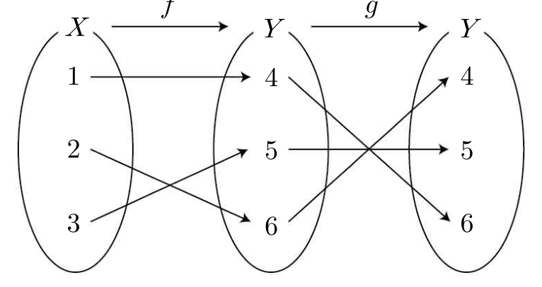
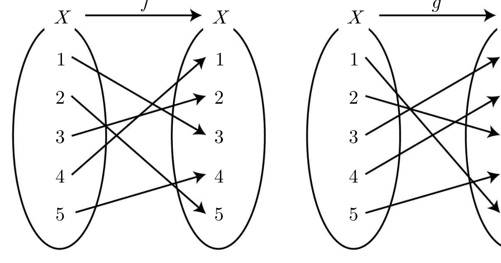
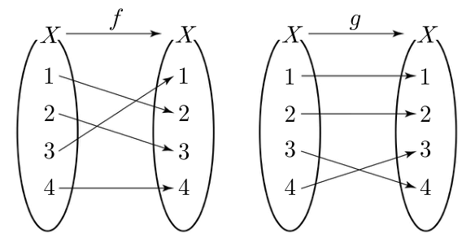

생성기 숫자판 5/6 · G2H-04b#0두 함수 $f\left(x\right)=\frac{1}{3}x-1$, $g\left(x\right)=3x-4$에 대하여 $\left(g\circ f^{-1}\right)\left(1\right)$의 값을 구하세요.
정답$14$ $f^{-1}\left(1\right)=k$라 하면 $f\left(k\right)=1$, $\frac{1}{3}k-1=1$이므로 $k=6$ $\left(g\circ f^{-1}\right)\left(1\right)=g\left(6\right)=14$
숫자: 원본 1 2 2 5 1 2 → 쌍둥이 1 3 1 3 4 1 1 · 같은 수: 1
생성기 숫자판 6/6 · G2H-04b#0두 함수 $f\left(x\right)=\frac{1}{3}x$, $g\left(x\right)=x-3$에 대하여 $\left(g\circ f^{-1}\right)\left(4\right)$의 값을 구하세요.
정답$9$ $f^{-1}\left(4\right)=k$라 하면 $f\left(k\right)=4$, $\frac{1}{3}k=4$이므로 $k=12$ $\left(g\circ f^{-1}\right)\left(4\right)=g\left(12\right)=9$
숫자: 원본 1 2 2 5 1 2 → 쌍둥이 1 3 3 1 4 · 같은 수: 1
2. 2018년 3월 가형 27번 · 4점 · 고1 범위 · 함수 · 4점 쌍둥이
원본 (내부용)집합 $X= \{ 3,4,5,6,7 \}$에 대하여 함수 $f:X \to X$는 일대일 대응이다. $3 \le n \le 5$인 모든 자연수 $n$에 대하여 $f(n)f(n+2)$의 값이 짝수일 때, $f(3)+f(7)$의 최댓값을 구하시오. [4점]
원본 정답 12
원본 풀이 (내부용)[출제의도] 일대일 대응의 뜻을 이용하여 함수의 최댓값을 구한다.
3 이상 5 이하의 자연수 \(n\)에 대하여 \(f(n)f(n+2)\)의 값이 짝수이므로
\(
f(3)\times f(5),\quad f(4)\times f(6),\quad f(5)\times f(7)
\)
은 모두 짝수이다.
\(f(4)\) 또는 \(f(6)\)은 짝수가 아니다. 집합 \(X\)의 원소 중 짝수인 것은 4, 6뿐이므로 \(f(3)\times f(5)\)와 \(f(5)\times f(7)\)이 모두 짝수이려면 \(f(5)\)는 짝수가 되어야 한다.
따라서 \(f(3),f(7)\)은 모두 홀수이므로 \(f(3)+f(7)\)의 최댓값은
\(
f(3)=5,\ f(7)=7\quad\text{또는}\quad f(3)=7,\ f(7)=5
\)
일 때 \(5+7=12\)이다.
쌍둥이 1/5 · 4점 쌍둥이집합 $X=\{5,\ 6,\ 7,\ 8,\ 9\}$에 대하여 함수 $f:X\to X$는 일대일 대응입니다. $5\le n\le7$인 모든 자연수 $n$에 대하여 $f(n)f(n+2)$의 값이 짝수일 때, $f(5)+f(9)$의 최댓값을 구하세요.
정답$16$ $X$의 원소 중 짝수는 $6$, $8$ 두 개뿐입니다 $f(5)f(7)$, $f(7)f(9)$, $f(6)f(8)$이 모두 짝수여야 하므로 $f(7)$은 짝수이고, $f(6)$, $f(8)$ 중 하나는 짝수입니다 따라서 $f(5)$, $f(9)$는 모두 홀수 $5, 7, 9$ 중에서 서로 다른 값입니다 최댓값은 $f(5)+f(9)=9+7=16$
쌍둥이 2/5 · 4점 쌍둥이집합 $X=\{7,\ 8,\ 9,\ 10,\ 11\}$에 대하여 함수 $f:X\to X$는 일대일 대응입니다. $7\le n\le9$인 모든 자연수 $n$에 대하여 $f(n)f(n+2)$의 값이 짝수일 때, $f(7)+f(11)$의 최댓값을 구하세요.
정답$20$ $X$의 원소 중 짝수는 $8$, $10$ 두 개뿐입니다 $f(7)f(9)$, $f(9)f(11)$, $f(8)f(10)$이 모두 짝수여야 하므로 $f(9)$는 짝수이고, $f(8)$, $f(10)$ 중 하나는 짝수입니다 따라서 $f(7)$, $f(11)$은 모두 홀수 $7, 9, 11$ 중에서 서로 다른 값입니다 최댓값은 $f(7)+f(11)=11+9=20$
쌍둥이 3/5 · 4점 쌍둥이집합 $X=\{9,\ 10,\ 11,\ 12,\ 13\}$에 대하여 함수 $f:X\to X$는 일대일 대응입니다. $9\le n\le11$인 모든 자연수 $n$에 대하여 $f(n)f(n+2)$의 값이 짝수일 때, $f(9)+f(13)$의 최댓값을 구하세요.
정답$24$ $X$의 원소 중 짝수는 $10$, $12$ 두 개뿐입니다 $f(9)f(11)$, $f(11)f(13)$, $f(10)f(12)$가 모두 짝수여야 하므로 $f(11)$은 짝수이고, $f(10)$, $f(12)$ 중 하나는 짝수입니다 따라서 $f(9)$, $f(13)$은 모두 홀수 $9, 11, 13$ 중에서 서로 다른 값입니다 최댓값은 $f(9)+f(13)=13+11=24$
원본 (내부용)그림은 두 함수 $f: X \to Y$, $g:Y \to Y$를 나타낸 것이다. $X$ $Y$ $Y$ $1$ $2$ $3$ $4$ $5$ $6$ $4$ $5$ $6$ $f$ $g$ $( f^{ -1} \circ g ) ( 4 )$의 값은? [3점]

① $1$② $2$③ $3$④ $4$⑤ $5$
원본 정답 ②
원본 풀이 (내부용)[출제의도] 합성함수 이해하기
\(
(f^{-1}\circ g)(4)=f^{-1}(g(4))=f^{-1}(6)=2
\)
생성기 숫자판 1/6 · G2f-17#2그림은 두 함수 $f:X\to Y$, $g:Y\to Y$를 나타낸 것입니다. $\left(f^{-1}\circ g\right)\left(9\right)$의 값으로 옳은 것을 고르세요.
① $11$② $15$③ $16$④ $17$⑤ $18$
정답③ $16$ 그림에서 $g\left(9\right)=14$ $f\left(16\right)=14$이므로 $f^{-7}\left(14\right)=16$ 따라서 $\left(f^{-7}\circ g\right)\left(9\right)=f^{-7}\left(g\left(9\right)\right)=16$
숫자: 원본 1 2 3 4 5 6 4 5 6 1 4 → 쌍둥이 1 9 · 같은 수: 1
생성기 숫자판 2/6 · G2f-17#2그림은 두 함수 $f:X\to Y$, $g:Y\to Y$를 나타낸 것입니다. $\left(f^{-1}\circ g\right)\left(13\right)$의 값으로 옳은 것을 고르세요.
① $9$② $13$③ $15$④ $16$⑤ $17$
정답③ $15$ 그림에서 $g\left(13\right)=14$ $f\left(15\right)=14$이므로 $f^{-7}\left(14\right)=15$ 따라서 $\left(f^{-7}\circ g\right)\left(13\right)=f^{-7}\left(g\left(13\right)\right)=15$
숫자: 원본 1 2 3 4 5 6 4 5 6 1 4 → 쌍둥이 1 13 · 같은 수: 1
생성기 숫자판 3/6 · G2f-17#2그림은 두 함수 $f:X\to Y$, $g:Y\to Y$를 나타낸 것입니다. $\left(f^{-1}\circ g\right)\left(11\right)$의 값으로 옳은 것을 고르세요.
① $7$② $11$③ $12$④ $13$⑤ $14$
정답② $11$ 그림에서 $g\left(11\right)=15$ $f\left(11\right)=15$이므로 $f^{-7}\left(15\right)=11$ 따라서 $\left(f^{-7}\circ g\right)\left(11\right)=f^{-7}\left(g\left(11\right)\right)=11$
숫자: 원본 1 2 3 4 5 6 4 5 6 1 4 → 쌍둥이 1 11 · 같은 수: 1
생성기 숫자판 4/6 · G2f-17#2그림은 두 함수 $f:X\to Y$, $g:Y\to Y$를 나타낸 것입니다. $\left(f^{-1}\circ g\right)\left(10\right)$의 값으로 옳은 것을 고르세요.
① $9$② $13$③ $15$④ $16$⑤ $17$
정답② $13$ 그림에서 $g\left(10\right)=9$ $f\left(13\right)=9$이므로 $f^{-7}\left(9\right)=13$ 따라서 $\left(f^{-7}\circ g\right)\left(10\right)=f^{-7}\left(g\left(10\right)\right)=13$
숫자: 원본 1 2 3 4 5 6 4 5 6 1 4 → 쌍둥이 1 10 · 같은 수: 1
생성기 숫자판 5/6 · G2f-17#2그림은 두 함수 $f:X\to Y$, $g:Y\to Y$를 나타낸 것입니다. $\left(f^{-1}\circ g\right)\left(15\right)$의 값으로 옳은 것을 고르세요.
① $7$② $12$③ $14$④ $15$⑤ $16$
정답② $12$ 그림에서 $g\left(15\right)=15$ $f\left(12\right)=15$이므로 $f^{-7}\left(15\right)=12$ 따라서 $\left(f^{-7}\circ g\right)\left(15\right)=f^{-7}\left(g\left(15\right)\right)=12$
숫자: 원본 1 2 3 4 5 6 4 5 6 1 4 → 쌍둥이 1 15 · 같은 수: 1
생성기 숫자판 6/6 · G2f-17#2그림은 두 함수 $f:X\to Y$, $g:Y\to Y$를 나타낸 것입니다. $\left(f^{-1}\circ g\right)\left(13\right)$의 값으로 옳은 것을 고르세요.
① $7$② $12$③ $13$④ $14$⑤ $15$
정답② $12$ 그림에서 $g\left(13\right)=13$ $f\left(12\right)=13$이므로 $f^{-7}\left(13\right)=12$ 따라서 $\left(f^{-7}\circ g\right)\left(13\right)=f^{-7}\left(g\left(13\right)\right)=12$
숫자: 원본 1 2 3 4 5 6 4 5 6 1 4 → 쌍둥이 1 13 · 같은 수: 1
6. 2018년 6월 가형 13번 · 3점 · 고1 범위 · 함수 · G2H-04b#11
원본 (내부용)$k<0$인 실수 $k$에 대하여 함수 $f ( x ) =x^{2} -2x+k$$( x \ge 1 )$의 그래프와 그 역함수 $y=f^{-1} ( x )$의 그래프가 만나는 점을 $\mathrm{P}$라 하고, 점 $\mathrm{P}$에서 $x$축에 내린 수선의 발을 $\mathrm{H}$라 하자. 삼각형 $\mathrm{POH}$의 넓이가 $8$일 때, $k$의 값은? (단, $\mathrm{O}$는 원점이다.) [3점]
① $-6$② $-5$③ $-4$④ $-3$⑤ $-2$
원본 정답 ③
원본 풀이 (내부용)[출제의도] 역함수의 그래프 이해하기
\(
f(x)=x^2-2x+k=(x-1)^2+k-1\quad(x\ge1)
\)
함수 \(y=f(x)\)의 그래프와 그 역함수 \(y=f^{-1}(x)\)의 그래프가 만나는 점은 함수 \(y=f(x)\)의 그래프와 직선 \(y=x\)가 만나는 점과 같다.
따라서 점 \(P\)는 직선 \(y=x\) 위의 점이므로 점 \(P\)의 좌표를 \((t,t)\)라 하면 삼각형 \(POH\)의 넓이가 8이므로
\(
\frac12\times t\times t=8,\quad t^2=16
\)
이다. \(\therefore t=4\quad(\because t\ge1)\)
한편 점 \(P(4,4)\)는 함수 \(f(x)=x^2-2x+k\)의 그래프 위의 점이므로
\(
f(4)=4^2-2\times4+k=4
\)
이다. 따라서 \(k=-4\)이다.
생성기 숫자판 1/6 · G2H-04b#11$k<0$인 실수 $k$에 대하여 함수 $f\left(x\right)=x^{2}-2x+k\ \left(x\ge 1\right)$의 그래프와 그 역함수 $y=f^{-1}\left(x\right)$의 그래프가 만나는 점을 $\mathrm{P}$, 점 $\mathrm{P}$에서 $x$축에 내린 수선의 발을 $\mathrm{H}$라 합시다. 삼각형 $\mathrm{POH}$의 넓이가 $32$일 때, $k$의 값으로 옳은 것을 고르세요. (단, $\mathrm{O}$는 원점입니다.)
① $-40$② $-39$③ $-38$④ $-37$⑤ $-36$
정답① $-40$ $y=f\left(x\right)$와 역함수의 그래프의 교점은 직선 $y=x$ 위에 있으므로 $\mathrm{P}\left(t,\ t\right)$라 하면 넓이는 $\frac{1}{2}t^{2}=32$, $t=8$ $f\left(8\right)=8$에서 $64-16+k=8$ 따라서 $k=-40$
숫자: 원본 0 2 1 1 8 → 쌍둥이 0 2 1 1 32 · 같은 수: 0 1 2
생성기 숫자판 2/6 · G2H-04b#11$k<0$인 실수 $k$에 대하여 함수 $f\left(x\right)=x^{2}-4x+k\ \left(x\ge 2\right)$의 그래프와 그 역함수 $y=f^{-1}\left(x\right)$의 그래프가 만나는 점을 $\mathrm{P}$, 점 $\mathrm{P}$에서 $x$축에 내린 수선의 발을 $\mathrm{H}$라 합시다. 삼각형 $\mathrm{POH}$의 넓이가 $32$일 때, $k$의 값으로 옳은 것을 고르세요. (단, $\mathrm{O}$는 원점입니다.)
① $-24$② $-23$③ $-22$④ $-21$⑤ $-20$
정답① $-24$ $y=f\left(x\right)$와 역함수의 그래프의 교점은 직선 $y=x$ 위에 있으므로 $\mathrm{P}\left(t,\ t\right)$라 하면 넓이는 $\frac{1}{2}t^{2}=32$, $t=8$ $f\left(8\right)=8$에서 $64-32+k=8$ 따라서 $k=-24$
숫자: 원본 0 2 1 1 8 → 쌍둥이 0 4 2 1 32 · 같은 수: 0 1 2
생성기 숫자판 3/6 · G2H-04b#11$k<0$인 실수 $k$에 대하여 함수 $f\left(x\right)=x^{2}-4x+k\ \left(x\ge 2\right)$의 그래프와 그 역함수 $y=f^{-1}\left(x\right)$의 그래프가 만나는 점을 $\mathrm{P}$, 점 $\mathrm{P}$에서 $x$축에 내린 수선의 발을 $\mathrm{H}$라 합시다. 삼각형 $\mathrm{POH}$의 넓이가 $\frac{49}{2}$일 때, $k$의 값으로 옳은 것을 고르세요. (단, $\mathrm{O}$는 원점입니다.)
① $-17$② $-16$③ $-15$④ $-14$⑤ $-13$
정답④ $-14$ $y=f\left(x\right)$와 역함수의 그래프의 교점은 직선 $y=x$ 위에 있으므로 $\mathrm{P}\left(t,\ t\right)$라 하면 넓이는 $\frac{1}{2}t^{2}=\frac{49}{2}$, $t=7$ $f\left(7\right)=7$에서 $49-28+k=7$ 따라서 $k=-14$
숫자: 원본 0 2 1 1 8 → 쌍둥이 0 4 2 1 49 2 · 같은 수: 0 1 2
생성기 숫자판 4/6 · G2H-04b#11$k<0$인 실수 $k$에 대하여 함수 $f\left(x\right)=x^{2}-2x+k\ \left(x\ge 1\right)$의 그래프와 그 역함수 $y=f^{-1}\left(x\right)$의 그래프가 만나는 점을 $\mathrm{P}$, 점 $\mathrm{P}$에서 $x$축에 내린 수선의 발을 $\mathrm{H}$라 합시다. 삼각형 $\mathrm{POH}$의 넓이가 $\frac{49}{2}$일 때, $k$의 값으로 옳은 것을 고르세요. (단, $\mathrm{O}$는 원점입니다.)
① $-29$② $-28$③ $-27$④ $-26$⑤ $-25$
정답② $-28$ $y=f\left(x\right)$와 역함수의 그래프의 교점은 직선 $y=x$ 위에 있으므로 $\mathrm{P}\left(t,\ t\right)$라 하면 넓이는 $\frac{1}{2}t^{2}=\frac{49}{2}$, $t=7$ $f\left(7\right)=7$에서 $49-14+k=7$ 따라서 $k=-28$
숫자: 원본 0 2 1 1 8 → 쌍둥이 0 2 1 1 49 2 · 같은 수: 0 1 2
생성기 숫자판 5/6 · G2H-04b#11$k<0$인 실수 $k$에 대하여 함수 $f\left(x\right)=x^{2}-2x+k\ \left(x\ge 1\right)$의 그래프와 그 역함수 $y=f^{-1}\left(x\right)$의 그래프가 만나는 점을 $\mathrm{P}$, 점 $\mathrm{P}$에서 $x$축에 내린 수선의 발을 $\mathrm{H}$라 합시다. 삼각형 $\mathrm{POH}$의 넓이가 $\frac{25}{2}$일 때, $k$의 값으로 옳은 것을 고르세요. (단, $\mathrm{O}$는 원점입니다.)
① $-13$② $-12$③ $-11$④ $-10$⑤ $-9$
정답④ $-10$ $y=f\left(x\right)$와 역함수의 그래프의 교점은 직선 $y=x$ 위에 있으므로 $\mathrm{P}\left(t,\ t\right)$라 하면 넓이는 $\frac{1}{2}t^{2}=\frac{25}{2}$, $t=5$ $f\left(5\right)=5$에서 $25-10+k=5$ 따라서 $k=-10$
숫자: 원본 0 2 1 1 8 → 쌍둥이 0 2 1 1 25 2 · 같은 수: 0 1 2
생성기 숫자판 6/6 · G2H-04b#11$k<0$인 실수 $k$에 대하여 함수 $f\left(x\right)=x^{2}-2x+k\ \left(x\ge 1\right)$의 그래프와 그 역함수 $y=f^{-1}\left(x\right)$의 그래프가 만나는 점을 $\mathrm{P}$, 점 $\mathrm{P}$에서 $x$축에 내린 수선의 발을 $\mathrm{H}$라 합시다. 삼각형 $\mathrm{POH}$의 넓이가 $18$일 때, $k$의 값으로 옳은 것을 고르세요. (단, $\mathrm{O}$는 원점입니다.)
① $-19$② $-18$③ $-17$④ $-16$⑤ $-15$
정답② $-18$ $y=f\left(x\right)$와 역함수의 그래프의 교점은 직선 $y=x$ 위에 있으므로 $\mathrm{P}\left(t,\ t\right)$라 하면 넓이는 $\frac{1}{2}t^{2}=18$, $t=6$ $f\left(6\right)=6$에서 $36-12+k=6$ 따라서 $k=-18$
숫자: 원본 0 2 1 1 8 → 쌍둥이 0 2 1 1 18 · 같은 수: 0 1 2
7. 2018년 6월 가형 26번 · 4점 · 고1 범위 · 함수 · 4점 쌍둥이
원본 (내부용)함수 $f ( x )$는 모든 실수 $x$에 대하여 $f ( x+4 ) =f ( x )$를 만족시키고, $f ( x ) = \begin{cases} -x-2 & (-2 \le x< -1) \\ x & (-1 \le x < 1) \\ -x+2 & ( 1 \le x < 2) \end{cases}$ 이다. 방정식 $f ( x ) = \frac{1}{n} x$의 서로 다른 실근의 개수가 $11$이 되도록 하는 모든 자연수 $n$의 값의 합을 구하시오. [4점]
원본 정답 33
원본 풀이 (내부용)[출제의도] 함수의 그래프를 이용하여 방정식 문제 해결하기
주어진 조건에 맞는 함수 \(y=f(x)\)의 그래프는 다음과 같다.
방정식 \(f(x)=\frac1n x\)의 서로 다른 실근의 개수는 함수 \(y=f(x)\)의 그래프와 직선 \(y=\frac1n x\)가 만나는 점의 개수이다.
(i) \(n=1\)일 때, 무수히 많은 점에서 만난다.
(ii) \(2\le n\le4\)일 때, 만나는 점의 개수는 3이다.
(iii) \(n=5\)일 때, 만나는 점의 개수는 5이다.
(iv) \(6\le n\le8\)일 때, 만나는 점의 개수는 7이다.
(v) \(n=9\)일 때, 만나는 점의 개수는 9이다.
(vi) \(10\le n\le12\)일 때, 만나는 점의 개수는 11이다.
따라서 만나는 점의 개수가 11이 되도록 하는 자연수 \(n\)은 10, 11, 12이다. 모든 자연수 \(n\)의 값의 합은
\(
10+11+12=33
\)
이다.
쌍둥이 1/5 · 4점 쌍둥이$0<x<25$인 자연수 $x$에 대하여 $2\sin^2\frac{\pi x}{5}-\cos\frac{\pi x}{5}\le1$을 만족시키는 $x$의 합을 구하시오.
정답$111$ $c=\cos\frac{\pi x}{5}$로 두면 $(2c-1)(c+1)\ge0$, 따라서 $c\ge\frac12$ 또는 $c=-1$이다. $x=1,\ldots,24$에서 해당 수는 $1,5,9,10,11,15,19,20,21$이며 합은 $111$이다.
쌍둥이 2/5 · 4점 쌍둥이함수 $f(x)$는 모든 실수 $x$에 대하여 $f(x+4)=f(x)$를 만족시키고, $f(x)=\begin{cases}-x-2 & (-2\le x<-1)\\ x & (-1\le x<1)\\ -x+2 & (1\le x<2)\end{cases}$입니다. 방정식 $f(x)=\frac{1}{n}x$의 서로 다른 실근의 개수가 $7$이 되도록 하는 모든 자연수 $n$의 값의 합을 구하세요.
정답$21$ $y=f(x)$는 꼭짓점 $(1+4j,\ 1)$, $(-1+4j,\ -1)$을 잇는 꺾은선이고 $-1\le f(x)\le1$이므로 직선 $y=\frac{x}{n}$과는 $-n\le x\le n$에서만 만납니다 원점에서 한 번 만나고, 원점에 대하여 대칭이므로 $x>0$에서 만나는 점의 개수를 세어 두 배 하고 $1$을 더합니다 $n$을 차례로 늘리며 세면 $n=2$: $3$개, $n=3$: $3$개, $n=4$: $3$개, $n=5$: $5$개, $n=6$: $7$개, $n=7$: $7$개, $n=8$: $7$개, $n=9$: $9$개, $n=10$: $11$개 근의 개수가 $7$인 $n$은 $6,\ 7,\ 8$이므로 합은 $21$
쌍둥이 3/5 · 4점 쌍둥이함수 $f(x)$는 모든 실수 $x$에 대하여 $f(x+4)=f(x)$를 만족시키고, $f(x)=\begin{cases}-x-2 & (-2\le x<-1)\\ x & (-1\le x<1)\\ -x+2 & (1\le x<2)\end{cases}$입니다. 방정식 $f(x)=\frac{1}{n}x$의 서로 다른 실근의 개수가 $15$가 되도록 하는 모든 자연수 $n$의 값의 합을 구하세요.
정답$45$ $y=f(x)$는 꼭짓점 $(1+4j,\ 1)$, $(-1+4j,\ -1)$을 잇는 꺾은선이고 $-1\le f(x)\le1$이므로 직선 $y=\frac{x}{n}$과는 $-n\le x\le n$에서만 만납니다 원점에서 한 번 만나고, 원점에 대하여 대칭이므로 $x>0$에서 만나는 점의 개수를 세어 두 배 하고 $1$을 더합니다 $n$을 차례로 늘리며 세면 $n=2$: $3$개, $n=3$: $3$개, $n=4$: $3$개, $n=5$: $5$개, $n=6$: $7$개, $n=7$: $7$개, $n=8$: $7$개, $n=9$: $9$개, $n=10$: $11$개, $n=11$: $11$개, $n=12$: $11$개, $n=13$: $13$개, $n=14$: $15$개, $n=15$: $15$개, $n=16$: $15$개, $n=17$: $17$개, $n=18$: $19$개 근의 개수가 $15$인 $n$은 $14,\ 15,\ 16$이므로 합은 $45$
쌍둥이 4/5 · 4점 쌍둥이함수 $f(x)$는 모든 실수 $x$에 대하여 $f(x+4)=f(x)$를 만족시키고, $f(x)=\begin{cases}-x-2 & (-2\le x<-1)\\ x & (-1\le x<1)\\ -x+2 & (1\le x<2)\end{cases}$입니다. 방정식 $f(x)=\frac{1}{n}x$의 서로 다른 실근의 개수가 $19$가 되도록 하는 모든 자연수 $n$의 값의 합을 구하세요.
정답$57$ $y=f(x)$는 꼭짓점 $(1+4j,\ 1)$, $(-1+4j,\ -1)$을 잇는 꺾은선이고 $-1\le f(x)\le1$이므로 직선 $y=\frac{x}{n}$과는 $-n\le x\le n$에서만 만납니다 원점에서 한 번 만나고, 원점에 대하여 대칭이므로 $x>0$에서 만나는 점의 개수를 세어 두 배 하고 $1$을 더합니다 $n$을 차례로 늘리며 세면 $n=2$: $3$개, $n=3$: $3$개, $n=4$: $3$개, $n=5$: $5$개, $n=6$: $7$개, $n=7$: $7$개, $n=8$: $7$개, $n=9$: $9$개, $n=10$: $11$개, $n=11$: $11$개, $n=12$: $11$개, $n=13$: $13$개, $n=14$: $15$개, $n=15$: $15$개, $n=16$: $15$개, $n=17$: $17$개, $n=18$: $19$개, $n=19$: $19$개, $n=20$: $19$개, $n=21$: $21$개, $n=22$: $23$개 근의 개수가 $19$인 $n$은 $18,\ 19,\ 20$이므로 합은 $57$
쌍둥이 5/5 · 4점 쌍둥이$0<x<18$인 자연수 $x$에 대하여 $2\sin^2\frac{\pi x}{3}-\cos\frac{\pi x}{3}\le1$을 만족시키는 $x$의 개수를 구하시오.
정답$11$ $c=\cos\theta$라 두면 부등식은 $2c^2+c-1\ge0$, 즉 $(2c-1)(c+1)\ge0$이므로 $c\ge\frac12$ 또는 $c=-1$이다. $x=1,\ldots,17$에서 해당하는 나머지는 $x\equiv0,1,3,5\pmod6$이다. 해당 수는 $1,3,5,6,7,9,11,12,13,15,17$의 11개이다.
원본 (내부용)함수 $f ( x ) =2x-1$에 대하여 $f^{-1} ( 3 )$의 값은? [3점]
① $-2$② $-1$③ $0$④ $1$⑤ $2$
원본 정답 ⑤
원본 풀이 (내부용)[출제의도] 역함수 계산하기
\(f^{-1}(3)=a\)라 하면 \(f(a)=3\)이므로
\(
f(a)=2a-1=3
\)
에서 \(a=2\)이다. 따라서 \(f^{-1}(3)=2\)이다.
생성기 숫자판 1/6 · G2H-04#0함수 $f\left(x\right)=4x+4$에 대하여 $f^{-1}\left(-4\right)$의 값으로 옳은 것을 고르세요.
① $-2$② $-1$③ $0$④ $1$⑤ $2$
정답① $-2$ $f^{-1}\left(-4\right)=k$라 하면 $f\left(k\right)=-4$ $4k+4=-4$이므로 $k=-2$
숫자: 원본 2 1 1 3 → 쌍둥이 4 4 1 4 · 같은 수: 1
생성기 숫자판 2/6 · G2H-04#0함수 $f\left(x\right)=2x-4$에 대하여 $f^{-1}\left(-6\right)$의 값으로 옳은 것을 고르세요.
① $-2$② $-1$③ $0$④ $1$⑤ $2$
정답② $-1$ $f^{-1}\left(-6\right)=k$라 하면 $f\left(k\right)=-6$ $2k-4=-6$이므로 $k=-1$
숫자: 원본 2 1 1 3 → 쌍둥이 2 4 1 6 · 같은 수: 1 2
생성기 숫자판 3/6 · G2H-04#0함수 $f\left(x\right)=3x+5$에 대하여 $f^{-1}\left(2\right)$의 값으로 옳은 것을 고르세요.
① $-1$② $0$③ $1$④ $2$⑤ $3$
정답① $-1$ $f^{-1}\left(2\right)=k$라 하면 $f\left(k\right)=2$ $3k+5=2$이므로 $k=-1$
숫자: 원본 2 1 1 3 → 쌍둥이 3 5 1 2 · 같은 수: 1 2 3
생성기 숫자판 4/6 · G2H-04#0함수 $f\left(x\right)=3x-1$에 대하여 $f^{-1}\left(-4\right)$의 값으로 옳은 것을 고르세요.
① $-2$② $-1$③ $0$④ $1$⑤ $2$
정답② $-1$ $f^{-1}\left(-4\right)=k$라 하면 $f\left(k\right)=-4$ $3k-1=-4$이므로 $k=-1$
숫자: 원본 2 1 1 3 → 쌍둥이 3 1 1 4 · 같은 수: 1 3
생성기 숫자판 5/6 · G2H-04#0함수 $f\left(x\right)=3x+5$에 대하여 $f^{-1}\left(8\right)$의 값으로 옳은 것을 고르세요.
① $0$② $1$③ $2$④ $3$⑤ $4$
정답② $1$ $f^{-1}\left(8\right)=k$라 하면 $f\left(k\right)=8$ $3k+5=8$이므로 $k=1$
숫자: 원본 2 1 1 3 → 쌍둥이 3 5 1 8 · 같은 수: 1 3
생성기 숫자판 6/6 · G2H-04#0함수 $f\left(x\right)=4x-3$에 대하여 $f^{-1}\left(1\right)$의 값으로 옳은 것을 고르세요.
① $-2$② $-1$③ $0$④ $1$⑤ $2$
정답④ $1$ $f^{-1}\left(1\right)=k$라 하면 $f\left(k\right)=1$ $4k-3=1$이므로 $k=1$
숫자: 원본 2 1 1 3 → 쌍둥이 4 3 1 1 · 같은 수: 1 3
9. 2018년 6월 나형 14번 · 4점 · 고1 범위 · 함수 · 4점 쌍둥이
원본 (내부용)두 정수 $a$, $b$에 대하여 함수 $f(x)= \begin{cases}a ( x-2 )^{2} +b & ( x<2 ) \\ -2x+10 & ( x \ge 2 )\end{cases}$ 는 실수 전체의 집합에서 정의된 역함수를 갖는다. $a+b$의 최솟값은? [4점]
① $1$② $3$③ $5$④ $7$⑤ $9$
원본 정답 ④
원본 풀이 (내부용)[출제의도] 역함수 문제 해결하기
함수 \(f(x)\)의 역함수가 존재하려면 함수 \(f(x)\)가 일대일 대응이어야 하므로 함수 \(y=f(x)\)의 그래프가 아래 그림과 같은 형태가 되어야 한다.
그림: \(x<2\)에서는 곡선 \(y=a(x-2)^2+b\), \(x\ge2\)에서는 기울기가 음수인 직선으로 그려져 있다. 두 부분은 \((2,6)\)에서 만난다. 곡선은 \(x<2\)에서 감소하고 직선도 감소한다.
곡선 \(y=a(x-2)^2+b\)는 점 \((2,6)\)을 지나므로 \(b=6\)이다. 또 \(x<2\)일 때 함수 \(f(x)\)의 그래프가 기울기가 음수인 직선이 되도록 \(a>0\)이다. 정수 \(a\)의 최솟값은 1이므로 \(a+b\)의 최솟값은 7이다.
쌍둥이 1/5 · 4점 쌍둥이두 정수 $a$, $b$에 대하여 함수 $f(x)=\begin{cases}a\left(x-1\right)^{2}+b & (x<1)\\ -3x+7 & (x\ge1)\end{cases}$가 실수 전체의 집합에서 정의된 역함수를 갖습니다. $a+b$의 최솟값으로 옳은 것을 고르세요.
① $5$② $7$③ $9$④ $11$⑤ $13$
정답① $5$ $x\ge1$에서 $f(x)=-3x+7$은 감소하고 치역은 $\{y\,|\,y\le4\}$입니다 역함수를 가지려면 일대일대응이어야 하므로 $x<1$에서도 감소해야 하고, $a\left(x-1\right)^{2}+b$는 $a>0$일 때 $x<1$에서 감소하며 치역은 $\{y\,|\,y>b\}$입니다 두 치역이 겹치지 않고 실수 전체가 되어야 하므로 $b=4$ $a$는 양의 정수이므로 $a+b$의 최솟값은 $1+4=5$
숫자: 원본 2 2 2 10 2 → 쌍둥이 1 1 3 7 1
쌍둥이 2/5 · 4점 쌍둥이두 정수 $a$, $b$에 대하여 함수 $f(x)=\begin{cases}a\left(x-4\right)^{2}+b & (x<4)\\ -3x+17 & (x\ge4)\end{cases}$가 실수 전체의 집합에서 정의된 역함수를 갖습니다. $a+b$의 최솟값으로 옳은 것을 고르세요.
① $4$② $6$③ $8$④ $10$⑤ $12$
정답② $6$ $x\ge4$에서 $f(x)=-3x+17$은 감소하고 치역은 $\{y\,|\,y\le5\}$입니다 역함수를 가지려면 일대일대응이어야 하므로 $x<4$에서도 감소해야 하고, $a\left(x-4\right)^{2}+b$는 $a>0$일 때 $x<4$에서 감소하며 치역은 $\{y\,|\,y>b\}$입니다 두 치역이 겹치지 않고 실수 전체가 되어야 하므로 $b=5$ $a$는 양의 정수이므로 $a+b$의 최솟값은 $1+5=6$
숫자: 원본 2 2 2 10 2 → 쌍둥이 4 4 3 17 4
쌍둥이 3/5 · 4점 쌍둥이두 정수 $a$, $b$에 대하여 함수 $f(x)=\begin{cases}a\left(x+1\right)^{2}+b & (x<-1)\\ -4x+3 & (x\ge-1)\end{cases}$가 실수 전체의 집합에서 정의된 역함수를 갖습니다. $a+b$의 최솟값으로 옳은 것을 고르세요.
① $4$② $6$③ $8$④ $10$⑤ $12$
정답③ $8$ $x\ge-1$에서 $f(x)=-4x+3$은 감소하고 치역은 $\{y\,|\,y\le7\}$입니다 역함수를 가지려면 일대일대응이어야 하므로 $x<-1$에서도 감소해야 하고, $a\left(x+1\right)^{2}+b$는 $a>0$일 때 $x<-1$에서 감소하며 치역은 $\{y\,|\,y>b\}$입니다 두 치역이 겹치지 않고 실수 전체가 되어야 하므로 $b=7$ $a$는 양의 정수이므로 $a+b$의 최솟값은 $1+7=8$
숫자: 원본 2 2 2 10 2 → 쌍둥이 1 1 4 3 1
쌍둥이 4/5 · 4점 쌍둥이두 정수 $a,b$에 대하여 $f(x)=\begin{cases}a(x-1)^2+b &(x<1)\\-4x+9 &(x\ge1)\end{cases}$가 실수 전체에서 역함수를 갖는다. $2a+b$의 최솟값을 구하시오.
정답$7$ 왼쪽 가지가 일대일이면서 오른쪽 가지와 치역이 겹치지 않으려면 $a>0$이어야 한다. 왼쪽 치역은 $(b,\infty)$이다. 오른쪽 가지 치역은 $(-\infty,5]$이므로 전단사 조건은 $b=5$. 양의 정수 $a$의 최솟값은 1. $2a+b=7$.
숫자: 원본 2 2 2 10 2 → 쌍둥이 1 1 4 9 1 2 · 같은 수: 2
쌍둥이 5/5 · 4점 쌍둥이두 정수 $a,b$에 대하여 $f(x)=\begin{cases}a(x-1)^2+b &(x<1)\\-5x+12 &(x\ge1)\end{cases}$가 실수 전체에서 역함수를 갖는다. $3a+b$의 최솟값을 구하시오.
정답$10$ 역함수가 존재하려면 왼쪽 포물선은 $x<1$에서 단조감소해야 하므로 $a>0$이며 치역은 $(b,\infty)$. 오른쪽 가지 치역은 $(-\infty,7]$, 따라서 치역이 겹치지 않고 전체 실수를 덮으려면 $b=7$. $a$의 최소 양의 정수는 1이어서 $3a+b=10$.
숫자: 원본 2 2 2 10 2 → 쌍둥이 1 1 5 12 1 3
10. 2018년 6월 나형 15번 · 4점 · 고1 범위 · 함수 · 4점 쌍둥이
원본 (내부용)그림은 두 함수 $f:X \to X$, $g:X \to X$를 나타낸 것이다. $X$ $1$ $2$ $3$ $4$ $5$ $f$ $g$ $1$ $2$ $3$ $4$ $5$ $1$ $2$ $3$ $4$ $5$ $1$ $2$ $3$ $4$ $5$ $X$ $X$ $X$ 함수 $h:X \to X$가 $f \circ h=g$를 만족시킬 때, $( h \circ f ) ( 3 )$의 값은? [4점]

① $1$② $2$③ $3$④ $4$⑤ $5$
원본 정답 ①
원본 풀이 (내부용)[출제의도] 함수의 합성 이해하기
\(
(h\circ f)(3)=h(f(3))=h(2)
\)
이다. 한편 \(f\circ h=g\)이므로
\(
(f\circ h)(2)=g(2)=2
\)
이다. 즉, \(f(h(2))=3\)이다. 이때 \(f(1)=3\)이므로 \(h(2)=1\)이다. 따라서
\(
(h\circ f)(3)=1
\)
이다.
쌍둥이 1/5 · 4점 쌍둥이그림은 두 함수 $f:X\rightarrow X$, $g:X\rightarrow X$를 나타낸 것입니다. 함수 $h:X\rightarrow X$가 $f\circ h=g$를 만족시킬 때, $\left(h\circ f\right)\left(5\right)$의 값으로 옳은 것을 고르세요.
쌍둥이 2/5 · 4점 쌍둥이그림은 두 함수 $f:X\rightarrow X$, $g:X\rightarrow X$를 나타낸 것입니다. 함수 $h:X\rightarrow X$가 $f\circ h=g$를 만족시킬 때, $\left(h\circ f\right)\left(2\right)$의 값으로 옳은 것을 고르세요.
쌍둥이 3/5 · 4점 쌍둥이그림은 두 함수 $f:X\rightarrow X$, $g:X\rightarrow X$를 나타낸 것입니다. 함수 $h:X\rightarrow X$가 $f\circ h=g$를 만족시킬 때, $\left(h\circ f\right)\left(4\right)$의 값으로 옳은 것을 고르세요.
쌍둥이 4/5 · 4점 쌍둥이그림은 두 함수 $f:X\rightarrow X$, $g:X\rightarrow X$를 나타낸 것입니다. 함수 $h:X\rightarrow X$가 $f\circ h=g$를 만족시킬 때, $\left(h\circ f\right)\left(1\right)$의 값으로 옳은 것을 고르세요.
쌍둥이 5/5 · 4점 쌍둥이그림은 두 함수 $f:X\rightarrow X$, $g:X\rightarrow X$를 나타낸 것입니다. 함수 $h:X\rightarrow X$가 $f\circ h=g$를 만족시킬 때, $\left(h\circ f\right)\left(3\right)$의 값으로 옳은 것을 고르세요.
원본 (내부용)두 함수 $f ( x ) =4x-5$, $g ( x ) =3x+1$ 에 대하여 $( f \circ g^{-1} ) ( k ) =7$을 만족시키는 실수 $k$의 값은? [$3$점]
① $4$② $7$③ $10$④ $13$⑤ $16$
원본 정답 ③
원본 풀이 (내부용)[출제의도] 역함수 이해하기
\(
g^{-1}(k)=a
\)
라 하면
\(
(f\circ g^{-1})(k)=f(a)=4a-5=7,\qquad a=3
\)
\(
g^{-1}(k)=3
\)
이므로
\(
k=g(3)=10
\)
생성기 숫자판 1/6 · G2H-04b#1두 함수 $f\left(x\right)=2x-6$, $g\left(x\right)=2x-1$에 대하여 $\left(f\circ g^{-1}\right)\left(k\right)=-4$를 만족시키는 실수 $k$의 값으로 옳은 것을 고르세요.
① $0$② $1$③ $2$④ $3$⑤ $4$
정답② $1$ $g^{-1}\left(k\right)=m$이라 하면 $f\left(m\right)=-4$, $2m-6=-4$이므로 $m=1$ $g^{-1}\left(k\right)=1$에서 $k=g\left(1\right)=1$
생성기 숫자판 2/6 · G2H-04b#1두 함수 $f\left(x\right)=7x-23$, $g\left(x\right)=11x-13$에 대하여 $\left(f\circ g^{-1}\right)\left(k\right)=19$? 만족시키는 실수 $k$의 값으로 옳은 것을 고르세요.
① $51$② $52$③ $53$④ $54$⑤ $55$
정답③ $53$ $g^{-1}(k)=m$이라 하면 $f(m)=19$, $7m-23=19$에서 $m=6$입니다. $g^{-1}(k)=6$이므로 $\frac{k+13}{11}=6$에서 $k=53$입니다. 따라서 $k=53$입니다.
생성기 숫자판 3/6 · G2H-04b#1두 함수 $f\left(x\right)=7x-23$, $g\left(x\right)=11x-13$에 대하여 $\left(f\circ g^{-1}\right)\left(k\right)=21$? 만족시키는 실수 $k$의 값으로 옳은 것을 고르세요.
① $\frac{379}{7}$② $\frac{386}{7}$③ $\frac{393}{7}$④ $\frac{400}{7}$⑤ $\frac{407}{7}$
정답③ $\frac{393}{7}$ $g^{-1}(k)=m$이라 하면 $f(m)=21$, $7m-23=21$에서 $m=\frac{44}{7}$입니다. $g^{-1}(k)=\frac{44}{7}$이므로 $\frac{k+13}{11}=\frac{44}{7}$에서 $k=\frac{393}{7}$입니다. 따라서 $k=\frac{393}{7}$입니다.
생성기 숫자판 4/6 · G2H-04b#1두 함수 $f\left(x\right)=2x+1$, $g\left(x\right)=3x+5$에 대하여 $\left(f\circ g^{-1}\right)\left(k\right)=115$를 만족시키는 실수 $k$의 값으로 옳은 것을 고르세요.
① $174$② $175$③ $176$④ $177$⑤ $178$
정답③ $176$ $g^{-1}\left(k\right)=m$이라 하면 $f\left(m\right)=115$, $2m+1=115$이므로 $m=57$ $g^{-1}\left(k\right)=57$에서 $k=g\left(57\right)=176$
생성기 숫자판 5/6 · G2H-04b#1두 함수 $f\left(x\right)=7x-23$, $g\left(x\right)=11x-13$에 대하여 $\left(f\circ g^{-1}\right)\left(k\right)=26$? 만족시키는 실수 $k$의 값으로 옳은 것을 고르세요.
① $62$② $63$③ $64$④ $65$⑤ $66$
정답③ $64$ $g^{-1}(k)=m$이라 하면 $f(m)=26$, $7m-23=26$에서 $m=7$입니다. $g^{-1}(k)=7$이므로 $\frac{k+13}{11}=7$에서 $k=64$입니다. 따라서 $k=64$입니다.
생성기 숫자판 6/6 · G2H-04b#1두 함수 $f\left(x\right)=7x-23$, $g\left(x\right)=11x-13$에 대하여 $\left(f\circ g^{-1}\right)\left(k\right)=13$? 만족시키는 실수 $k$의 값으로 옳은 것을 고르세요.
① $\frac{291}{7}$② $\frac{298}{7}$③ $\frac{305}{7}$④ $\frac{312}{7}$⑤ $\frac{319}{7}$
정답③ $\frac{305}{7}$ $g^{-1}(k)=m$이라 하면 $f(m)=13$, $7m-23=13$에서 $m=\frac{36}{7}$입니다. $g^{-1}(k)=\frac{36}{7}$이므로 $\frac{k+13}{11}=\frac{36}{7}$에서 $k=\frac{305}{7}$입니다. 따라서 $k=\frac{305}{7}$입니다.
원본 (내부용)함수 $f ( x ) =3x-7$에 대하여 $f^{-1} ( 5 )$의 값을 구하시오. [$3$점]
원본 정답 ④
원본 풀이 (내부용)[출제의도] 역함수 이해하기
함수 \(f(x)=3x-7\)에서 \(f^{-1}(5)=k\)라 하면 역함수의 성질에 의하여
\(
f(k)=3k-7=5
\)
이므로 \(k=4\)
따라서 \(f^{-1}(5)=4\)
생성기 숫자판 1/6 · G2H-04#0함수 $f\left(x\right)=3x+5$에 대하여 $f^{-1}\left(8\right)$의 값으로 옳은 것을 고르세요.
① $0$② $1$③ $2$④ $3$⑤ $4$
정답② $1$ $f^{-1}\left(8\right)=k$라 하면 $f\left(k\right)=8$ $3k+5=8$이므로 $k=1$
숫자: 원본 3 7 1 5 3 → 쌍둥이 3 5 1 8 · 같은 수: 1 3 5
생성기 숫자판 2/6 · G2H-04#0함수 $f\left(x\right)=4x-3$에 대하여 $f^{-1}\left(1\right)$의 값으로 옳은 것을 고르세요.
① $-2$② $-1$③ $0$④ $1$⑤ $2$
정답④ $1$ $f^{-1}\left(1\right)=k$라 하면 $f\left(k\right)=1$ $4k-3=1$이므로 $k=1$
숫자: 원본 3 7 1 5 3 → 쌍둥이 4 3 1 1 · 같은 수: 1 3
생성기 숫자판 3/6 · G2H-04#0함수 $f\left(x\right)=2x-4$에 대하여 $f^{-1}\left(-6\right)$의 값으로 옳은 것을 고르세요.
① $-2$② $-1$③ $0$④ $1$⑤ $2$
정답② $-1$ $f^{-1}\left(-6\right)=k$라 하면 $f\left(k\right)=-6$ $2k-4=-6$이므로 $k=-1$
숫자: 원본 3 7 1 5 3 → 쌍둥이 2 4 1 6 · 같은 수: 1
생성기 숫자판 4/6 · G2H-04#0함수 $f\left(x\right)=3x+5$에 대하여 $f^{-1}\left(2\right)$의 값으로 옳은 것을 고르세요.
① $-1$② $0$③ $1$④ $2$⑤ $3$
정답① $-1$ $f^{-1}\left(2\right)=k$라 하면 $f\left(k\right)=2$ $3k+5=2$이므로 $k=-1$
숫자: 원본 3 7 1 5 3 → 쌍둥이 3 5 1 2 · 같은 수: 1 3 5
생성기 숫자판 5/6 · G2H-04#0함수 $f\left(x\right)=x-7$에 대하여 $f^{-1}\left(-9\right)$의 값으로 옳은 것을 고르세요.
① $-2$② $-1$③ $0$④ $1$⑤ $2$
정답① $-2$ $f^{-1}\left(-9\right)=k$라 하면 $f\left(k\right)=-9$ $k-7=-9$이므로 $k=-2$
숫자: 원본 3 7 1 5 3 → 쌍둥이 7 1 9 · 같은 수: 1 7
생성기 숫자판 6/6 · G2H-04#0함수 $f\left(x\right)=x+5$에 대하여 $f^{-1}\left(8\right)$의 값으로 옳은 것을 고르세요.
① $1$② $2$③ $3$④ $4$⑤ $5$
정답③ $3$ $f^{-1}\left(8\right)=k$라 하면 $f\left(k\right)=8$ $k+5=8$이므로 $k=3$
숫자: 원본 3 7 1 5 3 → 쌍둥이 5 1 8 · 같은 수: 1 5
15. 2018년 11월 나형 5번 · 3점 · 고1 범위 · 함수 · G2H-04#0
원본 (내부용)함수 \(f(x)=x-2\)에 대하여 \(f^{-1}(0)\)의 값은? [3점]
① \(-2\)② \(-1\)③ 0④ 1⑤ 2
원본 정답 ⑤
원본 풀이 (내부용)[출제의도] 역함수 이해하기
\(
f^{-1}(0)=a\text{라 하면 }f(a)=0\text{이므로 }a-2=0
\)
따라서 \(a=2\)
생성기 숫자판 1/6 · G2H-04#0함수 $f\left(x\right)=x+5$에 대하여 $f^{-1}\left(9\right)$의 값으로 옳은 것을 고르세요.
① $2$② $3$③ $4$④ $5$⑤ $6$
정답③ $4$ $f^{-1}\left(9\right)=k$라 하면 $f\left(k\right)=9$ $k+5=9$이므로 $k=4$
숫자: 원본 2 1 0 → 쌍둥이 5 1 9 · 같은 수: 1
생성기 숫자판 2/6 · G2H-04#0함수 $f\left(x\right)=x-4$에 대하여 $f^{-1}\left(-5\right)$의 값으로 옳은 것을 고르세요.
① $-3$② $-2$③ $-1$④ $0$⑤ $1$
정답③ $-1$ $f^{-1}\left(-5\right)=k$라 하면 $f\left(k\right)=-5$ $k-4=-5$이므로 $k=-1$
숫자: 원본 2 1 0 → 쌍둥이 4 1 5 · 같은 수: 1
생성기 숫자판 3/6 · G2H-04#0함수 $f\left(x\right)=3x+2$에 대하여 $f^{-1}\left(-4\right)$의 값으로 옳은 것을 고르세요.
① $-5$② $-4$③ $-3$④ $-2$⑤ $-1$
정답④ $-2$ $f^{-1}\left(-4\right)=k$라 하면 $f\left(k\right)=-4$ $3k+2=-4$이므로 $k=-2$
숫자: 원본 2 1 0 → 쌍둥이 3 2 1 4 · 같은 수: 1 2
생성기 숫자판 4/6 · G2H-04#0함수 $f\left(x\right)=4x-4$에 대하여 $f^{-1}\left(8\right)$의 값으로 옳은 것을 고르세요.
① $3$② $4$③ $5$④ $6$⑤ $7$
정답① $3$ $f^{-1}\left(8\right)=k$라 하면 $f\left(k\right)=8$ $4k-4=8$이므로 $k=3$
숫자: 원본 2 1 0 → 쌍둥이 4 4 1 8 · 같은 수: 1
생성기 숫자판 5/6 · G2H-04#0함수 $f\left(x\right)=x-1$에 대하여 $f^{-1}\left(0\right)$의 값으로 옳은 것을 고르세요.
① $1$② $2$③ $3$④ $4$⑤ $5$
정답① $1$ $f^{-1}\left(0\right)=k$라 하면 $f\left(k\right)=0$ $k-1=0$이므로 $k=1$
숫자: 원본 2 1 0 → 쌍둥이 1 1 0 · 같은 수: 0 1
생성기 숫자판 6/6 · G2H-04#0함수 $f\left(x\right)=3x-5$에 대하여 $f^{-1}\left(10\right)$의 값으로 옳은 것을 고르세요.
① $4$② $5$③ $6$④ $7$⑤ $8$
정답② $5$ $f^{-1}\left(10\right)=k$라 하면 $f\left(k\right)=10$ $3k-5=10$이므로 $k=5$
숫자: 원본 2 1 0 → 쌍둥이 3 5 1 10 · 같은 수: 1
16. 2018년 11월 나형 11번 · 3점 · 고1 범위 · 함수 · G2f-17#3
원본 (내부용)그림은 집합 \(X\)에서 \(X\)로의 두 함수 \(f,\ g\)를 나타낸 것이다. - \(f\)의 대응: \(1\mapsto2,\ 2\mapsto3,\ 3\mapsto1,\ 4\mapsto4\) - \(g\)의 대응: \(1\mapsto1,\ 2\mapsto2,\ 3\mapsto4,\ 4\mapsto3\) \((f\circ g)(1)+(g\circ f)(3)\)의 값은? [3점]

① 3② 4③ 5④ 6⑤ 7
원본 정답 ①
원본 풀이 (내부용)[출제의도] 합성함수 이해하기
\(
g(1)=1\text{이므로 }f(g(1))=f(1)=2
\)
\(
f(3)=1\text{이므로 }g(f(3))=g(1)=1
\)
따라서
\(
(f\circ g)(1)+(g\circ f)(3)=3
\)
생성기 숫자판 1/6 · G2f-17#3그림은 집합 $X$에서 $X$로의 두 함수 $f$, $g$를 나타낸 것입니다. $\left(f\circ g\right)\left(10\right)+\left(g\circ f\right)\left(2\right)$의 값으로 옳은 것을 고르세요.
① $2$② $3$③ $4$④ $5$⑤ $6$
정답③ $4$ $\left(f\circ g\right)\left(10\right)=f\left(g\left(10\right)\right)=f\left(2\right)=2$ $\left(g\circ f\right)\left(2\right)=g\left(f\left(2\right)\right)=g\left(2\right)=2$ 따라서 구하는 값은 $2+2=4$
생성기 숫자판 2/6 · G2f-17#3그림은 집합 $X$에서 $X$로의 두 함수 $f$, $g$를 나타낸 것입니다. $\left(f\circ g\right)\left(4\right)+\left(g\circ f\right)\left(1\right)$의 값으로 옳은 것을 고르세요.
① $6$② $7$③ $8$④ $9$⑤ $10$
정답④ $9$ $\left(f\circ g\right)\left(4\right)=f\left(g\left(4\right)\right)=f\left(10\right)=1$ $\left(g\circ f\right)\left(1\right)=g\left(f\left(1\right)\right)=g\left(8\right)=8$ 따라서 구하는 값은 $1+8=9$
생성기 숫자판 3/6 · G2f-17#3그림은 집합 $X$에서 $X$로의 두 함수 $f$, $g$를 나타낸 것입니다. $\left(f\circ g\right)\left(4\right)+\left(g\circ f\right)\left(5\right)$의 값으로 옳은 것을 고르세요.
① $4$② $5$③ $6$④ $7$⑤ $8$
정답④ $7$ $\left(f\circ g\right)\left(4\right)=f\left(g\left(4\right)\right)=f\left(8\right)=2$ $\left(g\circ f\right)\left(5\right)=g\left(f\left(5\right)\right)=g\left(8\right)=5$ 따라서 구하는 값은 $2+5=7$
생성기 숫자판 4/6 · G2f-17#3그림은 집합 $X$에서 $X$로의 두 함수 $f$, $g$를 나타낸 것입니다. $\left(f\circ g\right)\left(7\right)+\left(g\circ f\right)\left(1\right)$의 값으로 옳은 것을 고르세요.
① $4$② $5$③ $6$④ $7$⑤ $8$
정답① $4$ $\left(f\circ g\right)\left(7\right)=f\left(g\left(7\right)\right)=f\left(5\right)=3$ $\left(g\circ f\right)\left(1\right)=g\left(f\left(1\right)\right)=g\left(3\right)=1$ 따라서 구하는 값은 $3+1=4$
생성기 숫자판 5/6 · G2f-17#3그림은 집합 $X$에서 $X$로의 두 함수 $f$, $g$를 나타낸 것입니다. $\left(f\circ g\right)\left(4\right)+\left(g\circ f\right)\left(4\right)$의 값으로 옳은 것을 고르세요.
① $13$② $14$③ $15$④ $16$⑤ $17$
정답③ $15$ $\left(f\circ g\right)\left(4\right)=f\left(g\left(4\right)\right)=f\left(5\right)=7$ $\left(g\circ f\right)\left(4\right)=g\left(f\left(4\right)\right)=g\left(7\right)=8$ 따라서 구하는 값은 $7+8=15$
생성기 숫자판 6/6 · G2f-17#3그림은 집합 $X$에서 $X$로의 두 함수 $f$, $g$를 나타낸 것입니다. $\left(f\circ g\right)\left(5\right)+\left(g\circ f\right)\left(10\right)$의 값으로 옳은 것을 고르세요.
① $6$② $7$③ $8$④ $9$⑤ $10$
정답① $6$ $\left(f\circ g\right)\left(5\right)=f\left(g\left(5\right)\right)=f\left(1\right)=5$ $\left(g\circ f\right)\left(10\right)=g\left(f\left(10\right)\right)=g\left(5\right)=1$ 따라서 구하는 값은 $5+1=6$
원본 (내부용)그림은 함수 $f:X \to X$를 나타낸 것이다. $f(5)+ ( f \circ f ) (9)$의 값은? [3점]
① $18$② $16$③ $14$④ $12$⑤ $10$
원본 정답 ②
원본 풀이 (내부용)[출제의도] 합성함수를 이해하여 함수값을 구한다.
그림의 대응 관계에서 \(f(5)=9\)이다.
도형 설명: 집합 \(X=\{1,3,5,7,9\}\)에서 집합 \(X\)로 가는 함수 \(f\)의 대응을 두 타원으로 나타냈다. 화살표로 각 원소의 대응을 표시한다.
생성기 숫자판 1/6 · G2f-16#0그림은 함수 $f:X\to X$를 나타낸 것입니다. $f\left(10\right)+\left(f\circ f\right)\left(10\right)$의 값으로 옳은 것을 고르세요.
① $1$② $3$③ $5$④ $7$⑤ $9$
정답⑤ $9$ 그림에서 $f\left(10\right)=8$ $\left(f\circ f\right)\left(10\right)=f\left(f\left(10\right)\right)=f\left(8\right)=1$ 따라서 $f\left(10\right)+\left(f\circ f\right)\left(10\right)=8+1=9$
숫자: 원본 5 9 → 쌍둥이 10 10
생성기 숫자판 2/6 · G2f-16#0그림은 함수 $f:X\to X$를 나타낸 것입니다. $f\left(3\right)+\left(f\circ f\right)\left(1\right)$의 값으로 옳은 것을 고르세요.
① $4$② $5$③ $6$④ $7$⑤ $8$
정답⑤ $8$ 그림에서 $f\left(3\right)=4$ $\left(f\circ f\right)\left(1\right)=f\left(f\left(1\right)\right)=f\left(4\right)=4$ 따라서 $f\left(3\right)+\left(f\circ f\right)\left(1\right)=4+4=8$
숫자: 원본 5 9 → 쌍둥이 3 1
생성기 숫자판 3/6 · G2f-16#0그림은 함수 $f:X\to X$를 나타낸 것입니다. $f\left(10\right)+\left(f\circ f\right)\left(6\right)$의 값으로 옳은 것을 고르세요.
① $16$② $18$③ $20$④ $22$⑤ $24$
정답⑤ $24$ 그림에서 $f\left(10\right)=12$ $\left(f\circ f\right)\left(6\right)=f\left(f\left(6\right)\right)=f\left(10\right)=12$ 따라서 $f\left(10\right)+\left(f\circ f\right)\left(6\right)=12+12=24$
숫자: 원본 5 9 → 쌍둥이 10 6
생성기 숫자판 4/6 · G2f-16#0그림은 함수 $f:X\to X$를 나타낸 것입니다. $f\left(12\right)+\left(f\circ f\right)\left(12\right)$의 값으로 옳은 것을 고르세요.
① $18$② $20$③ $22$④ $24$⑤ $26$
정답④ $24$ 그림에서 $f\left(12\right)=12$ $\left(f\circ f\right)\left(12\right)=f\left(f\left(12\right)\right)=f\left(12\right)=12$ 따라서 $f\left(12\right)+\left(f\circ f\right)\left(12\right)=12+12=24$
숫자: 원본 5 9 → 쌍둥이 12 12
생성기 숫자판 5/6 · G2f-16#0그림은 함수 $f:X\to X$를 나타낸 것입니다. $f\left(11\right)+\left(f\circ f\right)\left(3\right)$의 값으로 옳은 것을 고르세요.
① $3$② $4$③ $5$④ $6$⑤ $7$
정답② $4$ 그림에서 $f\left(11\right)=2$ $\left(f\circ f\right)\left(3\right)=f\left(f\left(3\right)\right)=f\left(11\right)=2$ 따라서 $f\left(11\right)+\left(f\circ f\right)\left(3\right)=2+2=4$
숫자: 원본 5 9 → 쌍둥이 11 3
생성기 숫자판 6/6 · G2f-16#0그림은 함수 $f:X\to X$를 나타낸 것입니다. $f\left(8\right)+\left(f\circ f\right)\left(1\right)$의 값으로 옳은 것을 고르세요.
① $3$② $4$③ $5$④ $6$⑤ $7$
정답④ $6$ 그림에서 $f\left(8\right)=3$ $\left(f\circ f\right)\left(1\right)=f\left(f\left(1\right)\right)=f\left(10\right)=3$ 따라서 $f\left(8\right)+\left(f\circ f\right)\left(1\right)=3+3=6$
숫자: 원본 5 9 → 쌍둥이 8 1
21. 2020년 3월 16번 · 4점 · 고1 범위 · 함수 · 4점 쌍둥이
원본 (내부용)함수 $f(x)= \sqrt{3x-12}$가 있다. 함수 $g(x)$가 $2$ 이상의 모든 실수 $x$에 대하여 $f^{-1} (g(x))=2x$ 를 만족시킬 때, $g(3)$의 값은? [4점]
① $2$② $\sqrt{5}$③ $\sqrt{6}$④ $\sqrt{7}$⑤ $2 \sqrt{2}$
원본 정답 ③
원본 풀이 (내부용)[출제의도] 역함수의 성질을 이용하여 함수값을 구하는 문제를 해결한다.
\(
f^{-1}(g(x))=2x
\)
에서
\(
f(f^{-1}(g(x)))=f(2x)
\)
\(
g(x)=f(2x)
\)
따라서
\(
g(3)=f(6)=\sqrt6
\)
[다른 풀이]
\(
f(x)=\sqrt{3x-12}
\)
에서
\(
f^{-1}(x)=\frac13x^2+4\quad(x\ge0)
\)
\(
f^{-1}(g(x))=2x
\)
에서
\(
\frac13(g(x))^2+4=2x
\)
이때 \(x\ge2\)에서 \(g(x)\ge0\)이므로
\(
g(x)=\sqrt{6x-12}
\)
따라서
\(
g(3)=\sqrt{6\times3-12}=\sqrt6
\)
쌍둥이 1/5 · 4점 쌍둥이함수 $f(x)=\sqrt{7x-47}$이 있습니다. 함수 $g(x)$가 $1$ 이상의 모든 실수 $x$에 대하여 $f^{-1}(g(x))=8x$를 만족시킬 때, $g(2)$의 값을 구하세요.
① $\sqrt{61}$② $\sqrt{63}$③ $\sqrt{65}$④ $\sqrt{67}$⑤ $\sqrt{69}$
생성기 숫자판 1/6 · G2f-17#1그림은 두 함수 $f:X\to Y$, $g:Y\to X$를 나타낸 것입니다. $\left(g\circ f\right)\left(7\right)-\left(f\circ g\right)\left(9\right)$의 값으로 옳은 것을 고르세요.
① $4$② $5$③ $6$④ $7$⑤ $8$
정답③ $6$ $\left(g\circ f\right)\left(7\right)=g\left(f\left(7\right)\right)=g\left(10\right)=9$ $\left(f\circ g\right)\left(9\right)=f\left(g\left(9\right)\right)=f\left(5\right)=3$ 따라서 $\left(g\circ f\right)\left(7\right)-\left(f\circ g\right)\left(9\right)=9-3=6$
숫자: 원본 3 3 → 쌍둥이 7 9
생성기 숫자판 2/6 · G2f-17#1그림은 두 함수 $f:X\to Y$, $g:Y\to X$를 나타낸 것입니다. $\left(g\circ f\right)\left(5\right)-\left(f\circ g\right)\left(9\right)$의 값으로 옳은 것을 고르세요.
① $2$② $3$③ $4$④ $5$⑤ $6$
정답② $3$ $\left(g\circ f\right)\left(5\right)=g\left(f\left(5\right)\right)=g\left(9\right)=9$ $\left(f\circ g\right)\left(9\right)=f\left(g\left(9\right)\right)=f\left(9\right)=6$ 따라서 $\left(g\circ f\right)\left(5\right)-\left(f\circ g\right)\left(9\right)=9-6=3$
숫자: 원본 3 3 → 쌍둥이 5 9
생성기 숫자판 3/6 · G2f-17#1그림은 두 함수 $f:X\to Y$, $g:Y\to X$를 나타낸 것입니다. $\left(g\circ f\right)\left(8\right)-\left(f\circ g\right)\left(1\right)$의 값으로 옳은 것을 고르세요.
① $-13$② $-12$③ $-11$④ $-10$⑤ $-9$
정답⑤ $-9$ $\left(g\circ f\right)\left(8\right)=g\left(f\left(8\right)\right)=g\left(10\right)=1$ $\left(f\circ g\right)\left(1\right)=f\left(g\left(1\right)\right)=f\left(8\right)=10$ 따라서 $\left(g\circ f\right)\left(8\right)-\left(f\circ g\right)\left(1\right)=1-10=-9$
숫자: 원본 3 3 → 쌍둥이 8 1
생성기 숫자판 4/6 · G2f-17#1그림은 두 함수 $f:X\to Y$, $g:Y\to X$를 나타낸 것입니다. $\left(g\circ f\right)\left(5\right)-\left(f\circ g\right)\left(9\right)$의 값으로 옳은 것을 고르세요.
① $-4$② $-3$③ $-2$④ $-1$⑤ $0$
정답③ $-2$ $\left(g\circ f\right)\left(5\right)=g\left(f\left(5\right)\right)=g\left(1\right)=5$ $\left(f\circ g\right)\left(9\right)=f\left(g\left(9\right)\right)=f\left(6\right)=7$ 따라서 $\left(g\circ f\right)\left(5\right)-\left(f\circ g\right)\left(9\right)=5-7=-2$
숫자: 원본 3 3 → 쌍둥이 5 9
생성기 숫자판 5/6 · G2f-17#1그림은 두 함수 $f:X\to Y$, $g:Y\to X$를 나타낸 것입니다. $\left(g\circ f\right)\left(6\right)-\left(f\circ g\right)\left(7\right)$의 값으로 옳은 것을 고르세요.
① $2$② $3$③ $4$④ $5$⑤ $6$
정답③ $4$ $\left(g\circ f\right)\left(6\right)=g\left(f\left(6\right)\right)=g\left(3\right)=7$ $\left(f\circ g\right)\left(7\right)=f\left(g\left(7\right)\right)=f\left(6\right)=3$ 따라서 $\left(g\circ f\right)\left(6\right)-\left(f\circ g\right)\left(7\right)=7-3=4$
숫자: 원본 3 3 → 쌍둥이 6 7
생성기 숫자판 6/6 · G2f-17#1그림은 두 함수 $f:X\to Y$, $g:Y\to X$를 나타낸 것입니다. $\left(g\circ f\right)\left(2\right)-\left(f\circ g\right)\left(4\right)$의 값으로 옳은 것을 고르세요.
① $6$② $7$③ $8$④ $9$⑤ $10$
정답① $6$ $\left(g\circ f\right)\left(2\right)=g\left(f\left(2\right)\right)=g\left(5\right)=10$ $\left(f\circ g\right)\left(4\right)=f\left(g\left(4\right)\right)=f\left(10\right)=4$ 따라서 $\left(g\circ f\right)\left(2\right)-\left(f\circ g\right)\left(4\right)=10-4=6$
숫자: 원본 3 3 → 쌍둥이 2 4
23. 2022년 3월 4번 · 3점 · 고1 범위 · 함수 · G2f-10#0
원본 (내부용)그림은 두 함수 \(f:X\to Y,\ g:Y\to Z\)를 나타낸 것이다. - \(X=\{1,2,3\}\), \(Y=\{2,3,4\}\)이며 \(f(1)=4,\ f(2)=3,\ f(3)=2\) - \(Y=\{2,3,4\}\), \(Z=\{1,2,5\}\)이며 \(g(2)=1,\ g(3)=5,\ g(4)=2\) \((g\circ f)(2)\)의 값은? [3점]
원본 (내부용)그림과 같이 한 변의 길이가 1인 정육각형 \(ABCDEF\)가 있다. 점 \(P\)는 점 \(A\)에서 출발하여 점 \(F\)까지 화살표 방향으로 정육각형 \(ABCDEF\)의 변을 따라 움직인다. 점 \(P\)가 점 \(A\)로부터 움직인 거리가 \(x\ (0<x<5)\)일 때, 삼각형 \(PFA\)의 넓이를 \(f(x)\)라 하자. 다음은 함수 \(f(x)\)에 대하여 \((f\circ f)(a)=\dfrac{9}{32}\)인 모든 실수 \(a\)의 값의 곱을 구하는 과정이다. \( (f\circ f)(a)=f(f(a))=\frac{9}{32} \) 에서 \(f(a)=b\)라 하면 \( f(b)=\frac{9}{32} \) 이고, 함수 \(f(x)\)의 최댓값은 (가)이므로 \( 0<b\leq(가) \) 이다. 점 \(P\)가 점 \(A\)로부터 움직인 거리가 \(b\)인 점을 \(Q\)라 하면 삼각형 \(QFA\)의 넓이는 \(\dfrac{9}{32}\)이다. 점 \(Q\)에서 직선 \(FA\)에 내린 수선의 발을 \(H\)라 하면 \( QH=\frac{9}{16} \) 이므로 \(b=(나)\)이다. 같은 방법으로 \(f(a)=(나)\)를 만족시키는 \(a\ (0<a<5)\)의 값을 구하면 \( a=\boxed{\phantom{0}}\quad\text{또는}\quad a=\boxed{\phantom{0}} \) 이다. 따라서 \((f\circ f)(a)=\dfrac{9}{32}\)를 만족시키는 모든 실수 \(a\)의 값의 곱은 (다)이다. 위의 (가), (나), (다)에 알맞은 수를 각각 \(p,\ q,\ r\)라 할 때, \(\dfrac{r}{p\times q}\)의 값은? [4점]
① \(\dfrac{26}{3}\)② \(\dfrac{28}{3}\)③ \(10\)④ \(\dfrac{32}{3}\)⑤ \(\dfrac{34}{3}\)
원본 정답 ②
원본 풀이 (내부용)[출제의도] 합성함수의 성질을 이용하여 정육각형 위를 움직이는 점의 위치를 추론한다.
\(
(f\circ f)(a)=f(f(a))=\frac9{32}
\)
에서 \(f(a)=b\)라 하면
\(
f(b)=\frac9{32}
\)
이다. 함수 \(f(x)\)가 삼각형 \(PFA\)의 넓이이므로 함수 \(f(x)\)는 점 \(P\)가 선분 \(CD\) 위에 있을 때 최댓값을 갖는다. 선분 \(AC\)의 중점을 \(M\)이라 하면 직각삼각형 \(MAB\)에서 \(\angle MAB=30^\circ\)이므로
\(
\begin{aligned}
\overline{AC}
&=2\overline{AM}\\
&=2\times\overline{AB}\cos30^\circ\\
&=2\times1\times\frac{\sqrt3}{2}\\
&=\sqrt3
\end{aligned}
\)
함수 \(f(x)\)의 최댓값은
\(
\frac12\times\overline{FA}\times\overline{AC}
=\frac12\times1\times\sqrt3=\frac{\sqrt3}{2}
\)
이므로 \(0<b<\frac{\sqrt3}{2}\)이다.
점 \(P\)가 점 \(A\)로부터 움직인 거리가 \(b\)인 점을 \(Q\)라 하면 점 \(Q\)는 선분 \(AB\) 위에 있고, 삼각형 \(QFA\)의 넓이는 \(\frac9{32}\)이다.
점 \(Q\)에서 직선 \(FA\)에 내린 수선의 발을 \(H\)라 하면 삼각형 \(QFA\)의 넓이는
\(
\frac12\times\overline{FA}\times\overline{QH}
=\frac12\times1\times\overline{QH}=\frac9{32}
\)
이므로
\(
\overline{QH}=\frac9{16}
\)
**[그림 1 설명]** 정육각형 \(ABCDEF\)에서 \(A\)는 아래쪽, \(B\)는 오른쪽, \(C\)는 오른쪽 위, \(D\)는 위쪽, \(E\)는 왼쪽 위, \(F\)는 왼쪽 아래에 놓여 있다. \(Q\)는 선분 \(AB\) 위에 있고 \(H\)는 밑변 \(FA\) 위에 있다. \(QH\perp FA\), \(\overline{QH}=\frac9{16}\)이 표시되어 있다.
직각삼각형 \(QAH\)에서 \(\angle QAH=60^\circ\)이므로
\(
\begin{aligned}
b=\overline{AQ}
&=\overline{QH}\times\frac1{\sin60^\circ}\\
&=\frac9{16}\times\frac2{\sqrt3}\\
&=\frac{3\sqrt3}{8}
\end{aligned}
\)
같은 방법으로 \(f(a)=\frac{3\sqrt3}{8}\)을 만족시키는 \(a\)의 값을 구하자.
점 \(P\)가 점 \(A\)로부터 움직인 거리가 \(a\)인 점을 \(R\)이라 하고, 점 \(R\)에서 직선 \(FA\)에 내린 수선의 발을 \(I\)라 하면 삼각형 \(RFA\)의 넓이는 \(\frac12\times FA\times RI\)이므로
\(
f(a)=\frac12\times1\times RI=\frac{3\sqrt3}{8}
\)
에서
\(
\overline{RI}=\frac{3\sqrt3}{4}
\)
이다. \(\overline{RI}=\frac{3\sqrt3}{4}\)이 되는 점 \(R\)의 위치는 [그림 2]의 \(R_1,R_2\)이다.
**[그림 2 설명]** \(R\)의 위치 \(R_1,R_2\), 선분 \(AB\), 직선 \(CD\), 수선 \(R_1H_1\), 각 \(\angle R_1CH_1=60^\circ\)가 표시되어 있다. 높이 표시는 \(\sqrt3\) 및 \(\frac{3\sqrt3}{4}\)이다.
점 \(R\)의 위치가 \(R_1\)일 때, \(a=\overline{AB}+\overline{BR_1}\)이다.
점 \(R_1\)에서 직선 \(CD\)에 내린 수선의 발을 \(H_1\)이라 하면 직각삼각형 \(R_1CH_1\)에서 \(\angle R_1CH_1=60^\circ\)이므로
\(
\begin{aligned}
a&=\overline{AB}+\overline{BR_1}\\
&=\overline{AB}+\overline{BC}-\overline{R_1C}\\
&=1+1-\overline{R_1H_1}\times\frac1{\sin60^\circ}\\
&=2-\left(\sqrt3-\frac{3\sqrt3}{4}\right)\times\frac2{\sqrt3}\\
&=2-\frac12=\frac32
\end{aligned}
\)
\(0<x<5\)인 모든 실수 \(x\)에 대하여 \(f(x)=f(5-x)\)가 성립하므로 점 \(R\)의 위치가 \(R_2\)일 때의 실수 \(a\)의 값은
\(
5-\frac32=\frac72
\)
이다.
따라서 \((f\circ f)(a)=\frac9{32}\)를 만족시키는 모든 실수 \(a\) \((0<a<5)\)의 값의 곱은
\(
\frac32\times\frac72=\frac{21}{4}
\)
이다.
따라서 \(p=\frac{\sqrt3}{2},\ q=\frac{3\sqrt3}{8},\ r=\frac{21}{4}\)이므로
\(
\frac{r}{p\times q}
=\frac{\frac{21}{4}}{\frac{\sqrt3}{2}\times\frac{3\sqrt3}{8}}
=\frac{28}{3}
\)
쌍둥이 1/5 · 4점 쌍둥이한 변의 길이가 $1$인 정육각형 $ABCDEF$가 있습니다. 점 $P$는 점 $A$에서 출발하여 점 $F$까지 $A\to B\to C\to D\to E\to F$의 방향으로 정육각형의 변을 따라 움직입니다. 점 $P$가 점 $A$로부터 움직인 거리가 $x$ $(0<x<5)$일 때, 삼각형 $PFA$의 넓이를 $f(x)$라 합니다. 다음은 함수 $f(x)$에 대하여 $(f\circ f)(a)=\frac{1}{4}$인 모든 실수 $a$의 값의 곱을 구하는 과정입니다. $(f\circ f)(a)=f(f(a))=\frac{1}{4}$에서 $f(a)=b$라 하면 $f(b)=\frac{1}{4}$이고, 함수 $f(x)$의 최댓값은 $\boxed{\text{(가)}}$이므로 $0<b\le\boxed{\text{(가)}}$입니다. 점 $P$가 점 $A$로부터 움직인 거리가 $b$인 점을 $Q$라 하면 삼각형 $QFA$의 넓이는 $\frac{1}{4}$입니다. 점 $Q$에서 직선 $FA$에 내린 수선의 발을 $H$라 하면 $\overline{QH}=\frac{1}{2}$이므로 $b=\boxed{\text{(나)}}$입니다. 같은 방법으로 $f(a)=\boxed{\text{(나)}}$를 만족시키는 $a$ $(0<a<5)$의 값을 구하면 $a=\boxed{\phantom{0}}$ 또는 $a=\boxed{\phantom{0}}$이므로 $(f\circ f)(a)=\frac{1}{4}$을 만족시키는 모든 실수 $a$의 값의 곱은 $\boxed{\text{(다)}}$입니다. (가), (나), (다)에 알맞은 수를 각각 $p$, $q$, $r$라 할 때, $\frac{r}{p\times q}$의 값으로 옳은 것을 고르세요.
① $\frac{85}{9}$② $\frac{86}{9}$③ $\frac{29}{3}$④ $\frac{88}{9}$⑤ $\frac{89}{9}$
정답④ $\frac{88}{9}$ 점 $P$가 변 $CD$ 위에 있을 때 직선 $FA$까지의 거리가 $\sqrt{3}$으로 가장 크므로 (가)$=\frac{1}{2}\times1\times\sqrt{3}=\frac{\sqrt{3}}{2}$ $0<x\le2$에서 점 $P$와 직선 $FA$ 사이의 거리는 $\frac{\sqrt{3}}{2}x$이므로 $\frac{\sqrt{3}}{2}b=\frac{1}{2}$에서 (나)$=\frac{\sqrt{3}}{3}$ (나머지 해 $5-\frac{\sqrt{3}}{3}$은 (가)보다 큼) $f(a)=\frac{\sqrt{3}}{3}$이면 거리가 $\frac{2\times\frac{\sqrt{3}}{3}}{1}=\frac{2\sqrt{3}}{3}$이므로 $\frac{\sqrt{3}}{2}a=\frac{2\sqrt{3}}{3}$ 또는 $\frac{\sqrt{3}}{2}(5-a)=\frac{2\sqrt{3}}{3}$, 즉 $a=\frac{4}{3}$ 또는 $a=\frac{11}{3}$ (다)$=\frac{4}{3}\times\frac{11}{3}=\frac{44}{9}$ $\frac{r}{p\times q}=\frac{\frac{44}{9}}{\frac{\sqrt{3}}{2}\times\frac{\sqrt{3}}{3}}=\frac{88}{9}$
쌍둥이 2/5 · 4점 쌍둥이한 변의 길이가 $2$인 정육각형 $ABCDEF$가 있습니다. 점 $P$는 점 $A$에서 출발하여 점 $F$까지 $A\to B\to C\to D\to E\to F$의 방향으로 정육각형의 변을 따라 움직입니다. 점 $P$가 점 $A$로부터 움직인 거리가 $x$ $(0<x<10)$일 때, 삼각형 $PFA$의 넓이를 $f(x)$라 합니다. 다음은 함수 $f(x)$에 대하여 $(f\circ f)(a)=\frac{3}{2}$인 모든 실수 $a$의 값의 곱을 구하는 과정입니다. $(f\circ f)(a)=f(f(a))=\frac{3}{2}$에서 $f(a)=b$라 하면 $f(b)=\frac{3}{2}$이고, 함수 $f(x)$의 최댓값은 $\boxed{\text{(가)}}$이므로 $0<b\le\boxed{\text{(가)}}$입니다. 점 $P$가 점 $A$로부터 움직인 거리가 $b$인 점을 $Q$라 하면 삼각형 $QFA$의 넓이는 $\frac{3}{2}$입니다. 점 $Q$에서 직선 $FA$에 내린 수선의 발을 $H$라 하면 $\overline{QH}=\frac{3}{2}$이므로 $b=\boxed{\text{(나)}}$입니다. 같은 방법으로 $f(a)=\boxed{\text{(나)}}$를 만족시키는 $a$ $(0<a<10)$의 값을 구하면 $a=\boxed{\phantom{0}}$ 또는 $a=\boxed{\phantom{0}}$이므로 $(f\circ f)(a)=\frac{3}{2}$을 만족시키는 모든 실수 $a$의 값의 곱은 $\boxed{\text{(다)}}$입니다. (가), (나), (다)에 알맞은 수를 각각 $p$, $q$, $r$라 할 때, $\frac{r}{p\times q}$의 값으로 옳은 것을 고르세요.
① $2$② $\frac{7}{3}$③ $\frac{8}{3}$④ $3$⑤ $\frac{10}{3}$
정답③ $\frac{8}{3}$ 점 $P$가 변 $CD$ 위에 있을 때 직선 $FA$까지의 거리가 $2\sqrt{3}$으로 가장 크므로 (가)$=\frac{1}{2}\times2\times2\sqrt{3}=2\sqrt{3}$ $0<x\le4$에서 점 $P$와 직선 $FA$ 사이의 거리는 $\frac{\sqrt{3}}{2}x$이므로 $\frac{\sqrt{3}}{2}b=\frac{3}{2}$에서 (나)$=\sqrt{3}$ (나머지 해 $10-\sqrt{3}$은 (가)보다 큼) $f(a)=\sqrt{3}$이면 거리가 $\frac{2\times\sqrt{3}}{2}=\sqrt{3}$이므로 $\frac{\sqrt{3}}{2}a=\sqrt{3}$ 또는 $\frac{\sqrt{3}}{2}(10-a)=\sqrt{3}$, 즉 $a=2$ 또는 $a=8$ (다)$=2\times8=16$ $\frac{r}{p\times q}=\frac{16}{2\sqrt{3}\times\sqrt{3}}=\frac{8}{3}$
쌍둥이 3/5 · 4점 쌍둥이한 변의 길이가 $2$인 정육각형 $ABCDEF$가 있습니다. 점 $P$는 점 $A$에서 출발하여 점 $F$까지 $A\to B\to C\to D\to E\to F$의 방향으로 정육각형의 변을 따라 움직입니다. 점 $P$가 점 $A$로부터 움직인 거리가 $x$ $(0<x<10)$일 때, 삼각형 $PFA$의 넓이를 $f(x)$라 합니다. 다음은 함수 $f(x)$에 대하여 $(f\circ f)(a)=\frac{3}{4}$인 모든 실수 $a$의 값의 곱을 구하는 과정입니다. $(f\circ f)(a)=f(f(a))=\frac{3}{4}$에서 $f(a)=b$라 하면 $f(b)=\frac{3}{4}$이고, 함수 $f(x)$의 최댓값은 $\boxed{\text{(가)}}$이므로 $0<b\le\boxed{\text{(가)}}$입니다. 점 $P$가 점 $A$로부터 움직인 거리가 $b$인 점을 $Q$라 하면 삼각형 $QFA$의 넓이는 $\frac{3}{4}$입니다. 점 $Q$에서 직선 $FA$에 내린 수선의 발을 $H$라 하면 $\overline{QH}=\frac{3}{4}$이므로 $b=\boxed{\text{(나)}}$입니다. 같은 방법으로 $f(a)=\boxed{\text{(나)}}$를 만족시키는 $a$ $(0<a<10)$의 값을 구하면 $a=\boxed{\phantom{0}}$ 또는 $a=\boxed{\phantom{0}}$이므로 $(f\circ f)(a)=\frac{3}{4}$을 만족시키는 모든 실수 $a$의 값의 곱은 $\boxed{\text{(다)}}$입니다. (가), (나), (다)에 알맞은 수를 각각 $p$, $q$, $r$라 할 때, $\frac{r}{p\times q}$의 값으로 옳은 것을 고르세요.
① $3$② $4$③ $5$④ $6$⑤ $7$
정답① $3$ 점 $P$가 변 $CD$ 위에 있을 때 직선 $FA$까지의 거리가 $2\sqrt{3}$으로 가장 크므로 (가)$=\frac{1}{2}\times2\times2\sqrt{3}=2\sqrt{3}$ $0<x\le4$에서 점 $P$와 직선 $FA$ 사이의 거리는 $\frac{\sqrt{3}}{2}x$이므로 $\frac{\sqrt{3}}{2}b=\frac{3}{4}$에서 (나)$=\frac{\sqrt{3}}{2}$ (나머지 해 $10-\frac{\sqrt{3}}{2}$은 (가)보다 큼) $f(a)=\frac{\sqrt{3}}{2}$이면 거리가 $\frac{2\times\frac{\sqrt{3}}{2}}{2}=\frac{\sqrt{3}}{2}$이므로 $\frac{\sqrt{3}}{2}a=\frac{\sqrt{3}}{2}$ 또는 $\frac{\sqrt{3}}{2}(10-a)=\frac{\sqrt{3}}{2}$, 즉 $a=1$ 또는 $a=9$ (다)$=1\times9=9$ $\frac{r}{p\times q}=\frac{9}{2\sqrt{3}\times\frac{\sqrt{3}}{2}}=3$
쌍둥이 4/5 · 4점 쌍둥이한 변의 길이가 $2$인 정육각형 $ABCDEF$가 있습니다. 점 $P$는 점 $A$에서 출발하여 점 $F$까지 $A\to B\to C\to D\to E\to F$의 방향으로 정육각형의 변을 따라 움직입니다. 점 $P$가 점 $A$로부터 움직인 거리가 $x$ $(0<x<10)$일 때, 삼각형 $PFA$의 넓이를 $f(x)$라 합니다. 다음은 함수 $f(x)$에 대하여 $(f\circ f)(a)=1$인 모든 실수 $a$의 값의 곱을 구하는 과정입니다. $(f\circ f)(a)=f(f(a))=1$에서 $f(a)=b$라 하면 $f(b)=1$이고, 함수 $f(x)$의 최댓값은 $\boxed{\text{(가)}}$이므로 $0<b\le\boxed{\text{(가)}}$입니다. 점 $P$가 점 $A$로부터 움직인 거리가 $b$인 점을 $Q$라 하면 삼각형 $QFA$의 넓이는 $\frac{3}{2}$입니다. 점 $Q$에서 직선 $FA$에 내린 수선의 발을 $H$라 하면 $\overline{QH}=1$이므로 $b=\boxed{\text{(나)}}$입니다. 같은 방법으로 $f(a)=\boxed{\text{(나)}}$를 만족시키는 $a$ $(0<a<10)$의 값을 구하면 $a=\boxed{\phantom{0}}$ 또는 $a=\boxed{\phantom{0}}$이므로 $(f\circ f)(a)=1$을 만족시키는 모든 실수 $a$의 값의 곱은 $\boxed{\text{(다)}}$입니다. (가), (나), (다)에 알맞은 수를 각각 $p$, $q$, $r$라 할 때, $\frac{r}{p\times q}$의 값으로 옳은 것을 고르세요.
① $\frac{25}{9}$② $\frac{26}{9}$③ $3$④ $\frac{28}{9}$⑤ $\frac{29}{9}$
정답② $\frac{26}{9}$ 정육각형 변이 2이므로 f의 최댓값은 $2\sqrt{3}$이다. $0<b\le2\sqrt{3}$에서 f(b)=1를 풀면 $b=2\cdot(1)/\sqrt{3}$이다. 모든 해는 증가 구간에 있다. f(a)=b의 해는 $a=2b/\sqrt{3}$ 또는 $a=10-2b/\sqrt{3}$이므로 해들의 곱 $r=(2b/\sqrt{3})(10-2b/\sqrt{3})$이다. $p=2\sqrt{3}$, q=b이므로 $r/(pq)=\frac{26}{9}$이다.
쌍둥이 5/5 · 4점 쌍둥이한 변의 길이가 $2$인 정육각형 $ABCDEF$가 있습니다. 점 $P$는 점 $A$에서 출발하여 점 $F$까지 $A\to B\to C\to D\to E\to F$의 방향으로 정육각형의 변을 따라 움직입니다. 점 $P$가 점 $A$로부터 움직인 거리가 $x$ $(0<x<10)$일 때, 삼각형 $PFA$의 넓이를 $f(x)$라 합니다. 다음은 함수 $f(x)$에 대하여 $(f\circ f)(a)=\frac{5}{4}$인 모든 실수 $a$의 값의 곱을 구하는 과정입니다. $(f\circ f)(a)=f(f(a))=\frac{5}{4}$에서 $f(a)=b$라 하면 $f(b)=\frac{5}{4}$이고, 함수 $f(x)$의 최댓값은 $\boxed{\text{(가)}}$이므로 $0<b\le\boxed{\text{(가)}}$입니다. 점 $P$가 점 $A$로부터 움직인 거리가 $b$인 점을 $Q$라 하면 삼각형 $QFA$의 넓이는 $\frac{3}{2}$입니다. 점 $Q$에서 직선 $FA$에 내린 수선의 발을 $H$라 하면 $\overline{QH}=\frac{5}{4}$이므로 $b=\boxed{\text{(나)}}$입니다. 같은 방법으로 $f(a)=\boxed{\text{(나)}}$를 만족시키는 $a$ $(0<a<10)$의 값을 구하면 $a=\boxed{\phantom{0}}$ 또는 $a=\boxed{\phantom{0}}$이므로 $(f\circ f)(a)=\frac{5}{4}$를 만족시키는 모든 실수 $a$의 값의 곱은 $\boxed{\text{(다)}}$입니다. (가), (나), (다)에 알맞은 수를 각각 $p$, $q$, $r$라 할 때, $\frac{r}{p\times q}$의 값으로 옳은 것을 고르세요.
① $\frac{23}{9}$② $\frac{8}{3}$③ $\frac{25}{9}$④ $3$⑤ $\frac{28}{9}$
정답③ $\frac{25}{9}$ 정육각형 변이 2이므로 f의 최댓값은 $2\sqrt{3}$이다. $0<b\le2\sqrt{3}$에서 $f(b)=\frac{5}{4}$를 풀면 $b=2\cdot(\frac{5}{4})/\sqrt{3}$이다. 모든 해는 증가 구간에 있다. f(a)=b의 해는 $a=2b/\sqrt{3}$ 또는 $a=10-2b/\sqrt{3}$이므로 해들의 곱 $r=(2b/\sqrt{3})(10-2b/\sqrt{3})$이다. $p=2\sqrt{3}$, q=b이므로 $r/(pq)=\frac{25}{9}$이다.
원본 (내부용)집합 \(X=\{x\mid x\geq a\}\)에서 집합 \(Y=\{y\mid y\geq b\}\)로의 함수 \( f(x)=x^2-4x+3 \) 이 일대일대응이 되도록 하는 두 실수 \(a,\ b\)에 대하여 \(a-b\)의 최댓값은 \(\dfrac{q}{p}\)이다. \(p+q\)의 값을 구하시오. (단, \(p\)와 \(q\)는 서로소인 자연수이다.) [4점]
원본 정답 17
원본 풀이 (내부용)[출제의도] 일대일대응을 이해하여 식의 최댓값을 구한다.
\(
f(x)=x^2-4x+3=(x-2)^2-1\)에서 이 함수가 일대일대응이 되기 위해서는 \(a\geq2\)이어야 한다.
\(a\geq2\)일 때 함수 \(f(x)\)의 치역은 \(\{y\mid y\geq f(a)\}\)이고 치역이 집합 \(Y=\{y\mid y\geq b\}\)와 같아야 하므로 \(b=f(a)\)이다.
\(
\begin{aligned}
a-b&=a-f(a)\\
&=-a^2+5a-3\\
&=-\left(a-\frac52\right)^2+\frac{13}{4}
\end{aligned}
\)
\(a\geq2\)에서 \(a-b\)의 최댓값은 \(a=\frac52\)일 때 \(\frac{13}{4}\)이다.
따라서 \(p=4,\ q=13\)이므로 \(p+q=17\).
쌍둥이 1/5 · 4점 쌍둥이집합 $X=\{x\mid x\ge a\}$에서 집합 $Y=\{y\mid y\ge b\}$로의 함수 $f(x)=x^{2}-12x+8$이 일대일대응이 되도록 하는 두 실수 $a$, $b$에 대하여 $a-b$의 최댓값을 구하세요.
① $\frac{133}{4}$② $\frac{137}{4}$③ $\frac{141}{4}$④ $\frac{145}{4}$⑤ $\frac{149}{4}$
쌍둥이 2/5 · 4점 쌍둥이집합 $X=\{x\mid x\ge a\}$에서 집합 $Y=\{y\mid y\ge b\}$로의 함수 $f(x)=x^{2}-6x+5$가 일대일대응이 되도록 하는 두 실수 $a$, $b$에 대하여 $a-b$의 최댓값은 $\frac{q}{p}$입니다. $p+q$의 값을 구하세요. (단, $p$와 $q$는 서로소인 자연수입니다.)
쌍둥이 3/5 · 4점 쌍둥이집합 $X=\{x\mid x\ge a\}$에서 집합 $Y=\{y\mid y\ge b\}$로의 함수 $f(x)=x^{2}-2x+2$가 일대일대응이 되도록 하는 두 실수 $a$, $b$에 대하여 $a-b$의 최댓값은 $\frac{q}{p}$입니다. $p+q$의 값을 구하세요. (단, $p$와 $q$는 서로소인 자연수입니다.)
쌍둥이 4/5 · 4점 쌍둥이집합 $X=\{x\mid x\ge a\}$에서 집합 $Y=\{y\mid y\ge b\}$로의 함수 $f(x)=x^{2}-8x+10$이 일대일대응이 되도록 하는 두 실수 $a$, $b$에 대하여 $a-b$의 최댓값은 $\frac{q}{p}$입니다. $p+q$의 값을 구하세요. (단, $p$와 $q$는 서로소인 자연수입니다.)
원본 (내부용)그림은 함수 \(f:X\to X\)를 나타낸 것이다. 집합 \(X\)의 왼쪽 타원에 \(1,2,3,4,5\), 오른쪽 타원에 \(1,2,3,4,5\)가 있다. 화살표는 \( 1\mapsto3,\quad 2\mapsto4,\quad 3\mapsto1,\quad 4\mapsto5,\quad 5\mapsto2 \) 를 나타낸다. \(f^{-1}(4)\)의 값은? [3점]
원본 (내부용)실수 전체의 집합에서 정의된 함수 \( f(x)= \begin{cases} (a+7)x-1 &(x<1)\\ (-a+5)x+2a+1 &(x\ge 1) \end{cases} \) 의 역함수가 존재하도록 하는 모든 정수 \(a\)의 개수는? [3점]
① 10② 11③ 12④ 13⑤ 14
원본 정답 ②
원본 풀이 (내부용)[출제의도] 역함수를 이해하여 미지수의 값을 구한다.
함수 \(f(x)\)의 역함수가 존재하려면 \(f(x)\)는 일대일대응이어야 한다.
\(a+7=0\) 또는 \(-a+5=0\)일 때 \(f(x)\)는 일대일대응이 아니다. 그러므로 \(a\ne-7,\ a\ne5\)이다.
함수 \(f(x)\)가 일대일대응이기 위해서는 직선 \(y=(a+7)x-1\)의 기울기 \(a+7\)과 직선 \(y=(-a+5)x+2\)의 기울기 \(-a+5\)의 부호가 같아야 한다.
그러므로
\(
(a+7)(-a+5)>0,\qquad (a+7)(a-5)<0
\)
\(
-7<a<5
\)
따라서 이를 만족시키는 정수 \(a\)는 \(-6,-5,\ldots,4\)이고 그 개수는 11이다.
생성기 숫자판 1/6 · G2M9-02#1실수 전체의 집합에서 정의된 함수 $f\left(x\right)=\begin{cases}\left(a+3\right)x-3 & \left(x<1\right)\\\left(-a+7\right)x+2a-7 & \left(x\ge 1\right)\end{cases}$의 역함수가 존재하도록 하는 모든 정수 $a$의 개수로 옳은 것을 고르세요.
① $5$② $6$③ $7$④ $8$⑤ $9$
정답⑤ $9$ $x=1$에서 $\left(a+3\right)\times 1-3=a+0$, $\left(-a+7\right)\times 1+2a-7=a+0$이므로 함수 $f\left(x\right)$는 실수 전체의 집합에서 연속입니다. 함수 $f\left(x\right)$의 역함수가 존재하려면 $f\left(x\right)$가 일대일대응이어야 하므로 두 직선의 기울기의 부호가 같아야 합니다. $\left(a+3\right)\left(-a+7\right)>0$에서 $\left(a+3\right)\left(a-7\right)<0$, $-3<a<7$ 따라서 정수 $a$는 $-2$, $-1$, $\cdots$, $6$이고 그 개수는 $9$
생성기 숫자판 2/6 · G2M9-02#1실수 전체의 집합에서 정의된 함수 $f\left(x\right)=\begin{cases}\left(a+2\right)x-4 & \left(x<1\right)\\\left(-a+3\right)x+2a-5 & \left(x\ge 1\right)\end{cases}$의 역함수가 존재하도록 하는 모든 정수 $a$의 개수로 옳은 것을 고르세요.
① $2$② $3$③ $4$④ $5$⑤ $6$
정답③ $4$ $x=1$에서 $\left(a+2\right)\times 1-4=a-2$, $\left(-a+3\right)\times 1+2a-5=a-2$이므로 함수 $f\left(x\right)$는 실수 전체의 집합에서 연속입니다. 함수 $f\left(x\right)$의 역함수가 존재하려면 $f\left(x\right)$가 일대일대응이어야 하므로 두 직선의 기울기의 부호가 같아야 합니다. $\left(a+2\right)\left(-a+3\right)>0$에서 $\left(a+2\right)\left(a-3\right)<0$, $-2<a<3$ 따라서 정수 $a$는 $-1$, $0$, $\cdots$, $2$이고 그 개수는 $4$
생성기 숫자판 3/6 · G2M9-02#1실수 전체의 집합에서 정의된 함수 $f\left(x\right)=\begin{cases}\left(a+5\right)x+3 & \left(x<1\right)\\\left(-a+7\right)x+2a+1 & \left(x\ge 1\right)\end{cases}$의 역함수가 존재하도록 하는 모든 정수 $a$의 개수로 옳은 것을 고르세요.
① $7$② $8$③ $9$④ $10$⑤ $11$
정답⑤ $11$ $x=1$에서 $\left(a+5\right)\times 1+3=a+8$, $\left(-a+7\right)\times 1+2a+1=a+8$이므로 함수 $f\left(x\right)$는 실수 전체의 집합에서 연속입니다. 함수 $f\left(x\right)$의 역함수가 존재하려면 $f\left(x\right)$가 일대일대응이어야 하므로 두 직선의 기울기의 부호가 같아야 합니다. $\left(a+5\right)\left(-a+7\right)>0$에서 $\left(a+5\right)\left(a-7\right)<0$, $-5<a<7$ 따라서 정수 $a$는 $-4$, $-3$, $\cdots$, $6$이고 그 개수는 $11$
생성기 숫자판 4/6 · G2M9-02#1실수 전체의 집합에서 정의된 함수 $f\left(x\right)=\begin{cases}\left(a+4\right)x-3 & \left(x<1\right)\\\left(-a+7\right)x+2a-6 & \left(x\ge 1\right)\end{cases}$의 역함수가 존재하도록 하는 모든 정수 $a$의 개수로 옳은 것을 고르세요.
① $9$② $10$③ $11$④ $12$⑤ $13$
정답② $10$ $x=1$에서 $\left(a+4\right)\times 1-3=a+1$, $\left(-a+7\right)\times 1+2a-6=a+1$이므로 함수 $f\left(x\right)$는 실수 전체의 집합에서 연속입니다. 함수 $f\left(x\right)$의 역함수가 존재하려면 $f\left(x\right)$가 일대일대응이어야 하므로 두 직선의 기울기의 부호가 같아야 합니다. $\left(a+4\right)\left(-a+7\right)>0$에서 $\left(a+4\right)\left(a-7\right)<0$, $-4<a<7$ 따라서 정수 $a$는 $-3$, $-2$, $\cdots$, $6$이고 그 개수는 $10$
생성기 숫자판 5/6 · G2M9-02#1실수 전체의 집합에서 정의된 함수 $f\left(x\right)=\begin{cases}\left(a+8\right)x+2 & \left(x<1\right)\\\left(-a+7\right)x+2a+3 & \left(x\ge 1\right)\end{cases}$의 역함수가 존재하도록 하는 모든 정수 $a$의 개수로 옳은 것을 고르세요.
① $14$② $15$③ $16$④ $17$⑤ $18$
정답① $14$ $x=1$에서 $\left(a+8\right)\times 1+2=a+10$, $\left(-a+7\right)\times 1+2a+3=a+10$이므로 함수 $f\left(x\right)$는 실수 전체의 집합에서 연속입니다. 함수 $f\left(x\right)$의 역함수가 존재하려면 $f\left(x\right)$가 일대일대응이어야 하므로 두 직선의 기울기의 부호가 같아야 합니다. $\left(a+8\right)\left(-a+7\right)>0$에서 $\left(a+8\right)\left(a-7\right)<0$, $-8<a<7$ 따라서 정수 $a$는 $-7$, $-6$, $\cdots$, $6$이고 그 개수는 $14$
생성기 숫자판 6/6 · G2M9-02#1실수 전체의 집합에서 정의된 함수 $f\left(x\right)=\begin{cases}\left(a+6\right)x-2 & \left(x<1\right)\\\left(-a+4\right)x+2a & \left(x\ge 1\right)\end{cases}$의 역함수가 존재하도록 하는 모든 정수 $a$의 개수로 옳은 것을 고르세요.
① $8$② $9$③ $10$④ $11$⑤ $12$
정답② $9$ $x=1$에서 $\left(a+6\right)\times 1-2=a+4$, $\left(-a+4\right)\times 1+2a=a+4$이므로 함수 $f\left(x\right)$는 실수 전체의 집합에서 연속입니다. 함수 $f\left(x\right)$의 역함수가 존재하려면 $f\left(x\right)$가 일대일대응이어야 하므로 두 직선의 기울기의 부호가 같아야 합니다. $\left(a+6\right)\left(-a+4\right)>0$에서 $\left(a+6\right)\left(a-4\right)<0$, $-6<a<4$ 따라서 정수 $a$는 $-5$, $-4$, $\cdots$, $3$이고 그 개수는 $9$
원본 (내부용)집합 \(X=\{1,2,3,4\}\)에 대하여 함수 \(f:X\to X\)가 다음 조건을 만족시킨다. \( \begin{aligned} \text{(가)}\quad&\text{집합 }X\text{의 모든 원소 }x\text{에 대하여 }x+f(f(x))\le5\text{이다.}\\ \text{(나)}\quad&\text{함수 }f\text{의 치역은 }\{1,2,4\}\text{이다.} \end{aligned} \) <보기>에서 옳은 것만을 있는 대로 고른 것은? [4점] <보기> - ㄱ. \(f(f(4))=1\) - ㄴ. \(f(3)=4\) - ㄷ. 가능한 함수 \(f\)의 개수는 4이다.
① ㄱ② ㄱ, ㄴ③ ㄱ, ㄷ④ ㄴ, ㄷ⑤ ㄱ, ㄴ, ㄷ
원본 정답 ②
원본 풀이 (내부용)[출제의도] 합성함수를 이용하여 조건을 만족시키는 함수를 추론한다.
ㄱ. 조건 (가)에 의하여 \(f(f(4))\leq1\)이므로 \(f(f(4))=1\)이다. (참)
ㄴ.
(i) \(f(4)=1\)일 때
\(
f(f(4))=f(1)=1
\)
이므로
① \(f(3)=1\)이면 함수 \(f\)의 치역이 \(\{1,2,4\}\)가 될 수 없으므로 조건 (나)를 만족시키지 않는다.
② \(f(3)=2\)이면 함수 \(f\)의 치역이 \(\{1,2,4\}\)이므로 \(f(2)=4\)이고 \(f(f(3))=f(2)=4>2\)가 되어 조건 (가)를 만족시키지 않는다.
③ \(f(3)=4\)이면 함수 \(f\)의 치역이 \(\{1,2,4\}\)이므로 \(f(2)=2\)이고
\(
f(f(1))=f(1)=1,\quad f(f(2))=f(2)=2,\quad f(f(3))=f(4)=1
\)
이 되어 조건을 만족시킨다.
(ii) \(f(4)=2\)일 때
\(
f(f(4))=f(2)=1
\)
이다.
① \(f(3)=1\)이면 함수 \(f\)의 치역이 \(\{1,2,4\}\)이므로 \(f(1)=4\)이고
\(
f(f(2))=f(1)=4>3
\)
이 되어 조건 (가)를 만족시키지 않는다.
② \(f(3)=2\)이면 함수 \(f\)의 치역이 \(\{1,2,4\}\)이므로 \(f(1)=4\)이다. 따라서
\(
f(f(2))=f(1)=4>3
\)
이 되어 조건 (가)를 만족시키지 않는다.
③ \(f(3)=4\)일 때
\(f(1)=1\)이면
\(
f(f(1))=f(1)=1,\quad f(f(2))=f(1)=1,\quad f(f(3))=f(4)=2
\)
가 되어 조건을 만족시킨다.
\(f(1)=2\)이면
\(
f(f(1))=f(2)=1,\quad f(f(2))=f(1)=2,\quad f(f(3))=f(4)=2
\)
가 되어 조건을 만족시킨다.
\(f(1)=4\)이면 \(f(f(2))=f(1)=4>3\)이 되어 조건 (가)를 만족시키지 않는다.
(iii) \(f(4)=4\)일 때
\(
f(f(4))=f(4)=4>1
\)
이므로 조건 (가)를 만족시키지 않는다.
(i), (ii), (iii)에서 가능한 모든 함수 \(f\)에 대하여 \(f(3)=4\)이다. (참)
ㄷ. (i), (ii), (iii)에서 가능한 함수 \(f\)의 개수는 3이다. (거짓)
따라서 옳은 것은 ㄱ, ㄴ이다.
쌍둥이 1/5 · 4점 쌍둥이집합 $X=\{1,\ 2,\ 3,\ 4\}$에 대하여 함수 $f:X\to X$가 다음 조건을 만족시킵니다. (가) 집합 $X$의 모든 원소 $x$에 대하여 $x+f(f(x))\le6$입니다. (나) 함수 $f$의 치역은 $\{2,\ 3,\ 4\}$입니다. <보기>에서 옳은 것만을 있는 대로 고른 것을 고르세요. ㄱ. $f(f(4))=2$ ㄴ. $f(3)=2$ ㄷ. 가능한 함수 $f$의 개수는 $3$입니다.
① ㄱ② ㄱ, ㄴ③ ㄱ, ㄷ④ ㄴ, ㄷ⑤ ㄱ, ㄴ, ㄷ
정답① ㄱ (가)에서 $f(f(4))\le2$이고 치역의 원소 중 이를 만족시키는 값을 따지면 $f(f(4))$의 값은 $2$입니다. ㄱ은 참입니다. 조건을 모두 만족시키는 함수를 하나씩 찾으면 다음과 같습니다: $(f(1),f(2),f(3),f(4))=(3,2,4,2)$; $(f(1),f(2),f(3),f(4))=(4,2,2,3)$; $(f(1),f(2),f(3),f(4))=(4,2,3,2)$; $(f(1),f(2),f(3),f(4))=(4,3,2,3)$ $f(3)$의 값은 $2, 3, 4$이므로 ㄴ은 거짓입니다. 가능한 함수는 $4$개이므로 ㄷ은 거짓입니다. 옳은 것은 ㄱ입니다.
쌍둥이 2/5 · 4점 쌍둥이집합 $X=\{1,\ 2,\ 3,\ 4\}$에 대하여 함수 $f:X\to X$가 다음 조건을 만족시킵니다. (가) 집합 $X$의 모든 원소 $x$에 대하여 $x+f(f(x))\le6$입니다. (나) 함수 $f$의 치역은 $\{1,\ 3,\ 4\}$입니다. <보기>에서 옳은 것만을 있는 대로 고른 것을 고르세요. ㄱ. $f(f(4))=1$ ㄴ. $f(3)=4$ ㄷ. 가능한 함수 $f$의 개수는 $4$입니다.
① ㄱ② ㄱ, ㄴ③ ㄱ, ㄷ④ ㄴ, ㄷ⑤ ㄱ, ㄴ, ㄷ
정답③ ㄱ, ㄷ (가)에서 $f(f(4))\le2$이고 치역의 원소 중 이를 만족시키는 값을 따지면 $f(f(4))$의 값은 $1$입니다. ㄱ은 참입니다. 조건을 모두 만족시키는 함수를 하나씩 찾으면 다음과 같습니다: $(f(1),f(2),f(3),f(4))=(1,3,4,1)$; $(f(1),f(2),f(3),f(4))=(1,4,1,3)$; $(f(1),f(2),f(3),f(4))=(1,4,3,1)$; $(f(1),f(2),f(3),f(4))=(3,4,1,3)$ $f(3)$의 값은 $1, 3, 4$이므로 ㄴ은 거짓입니다. 가능한 함수는 $4$개이므로 ㄷ은 참입니다. 옳은 것은 ㄱ, ㄷ입니다.
쌍둥이 3/5 · 4점 쌍둥이집합 $X=\{1,\ 2,\ 3,\ 4\}$에 대하여 함수 $f:X\to X$가 다음 조건을 만족시킵니다. (가) 집합 $X$의 모든 원소 $x$에 대하여 $x+f(f(x))\le5$입니다. (나) 함수 $f$의 치역은 $\{1,\ 2,\ 3\}$입니다. <보기>에서 옳은 것만을 있는 대로 고른 것을 고르세요. ㄱ. $f(f(4))=1$ ㄴ. $f(3)=3$ ㄷ. 가능한 함수 $f$의 개수는 $5$입니다.
① ㄱ② ㄱ, ㄴ③ ㄱ, ㄷ④ ㄴ, ㄷ⑤ ㄱ, ㄴ, ㄷ
정답③ ㄱ, ㄷ (가)에서 $f(f(4))\le1$이고 치역의 원소 중 이를 만족시키는 값을 따지면 $f(f(4))$의 값은 $1$입니다. ㄱ은 참입니다. 조건을 모두 만족시키는 함수를 하나씩 찾으면 다음과 같습니다: $(f(1),f(2),f(3),f(4))=(1,2,1,3)$; $(f(1),f(2),f(3),f(4))=(2,1,1,3)$; $(f(1),f(2),f(3),f(4))=(2,2,1,3)$; $(f(1),f(2),f(3),f(4))=(2,3,1,3)$; $(f(1),f(2),f(3),f(4))=(3,1,2,2)$ $f(3)$의 값은 $1, 2$이므로 ㄴ은 거짓입니다. 가능한 함수는 $5$개이므로 ㄷ은 참입니다. 옳은 것은 ㄱ, ㄷ입니다.
쌍둥이 4/5 · 4점 쌍둥이집합 $X=\{1,2,3,4\}$에 대하여 함수 $f:X\to X$의 치역은 $\{1,2,4\}$이고, 모든 $x\in X$에 대하여 $x+f(f(x))\le5$입니다. 이 조건을 만족시키며 $f(3)=4$인 함수 $f$의 개수를 구하세요.
① $1$② $2$③ $3$④ $4$⑤ $5$
정답③ $3$ $f$의 치역이 $\{1,2,4\}$이고 부등식을 만족시키는 함수는 네 값 $(f(1),f(2),f(3),f(4))$로 적으면 $(1,1,4,2)$, $(1,2,4,1)$, $(2,1,4,2)$뿐이다. 이는 각 입력 $x$에 대해 $x+f(f(x))\le5$를 대입해 가능한 값들을 거르는 전수 분류이다. 세 함수 모두 $f(3)=4$를 만족한다. 따라서 구하는 개수는 $3$이다.
쌍둥이 5/5 · 4점 쌍둥이집합 $X=\{1,2,3,4\}$에 대하여 함수 $f:X\to X$의 치역은 $\{1,3,4\}$이고, 모든 $x\in X$에 대하여 $x+f(f(x))\le7$입니다. 이 조건을 만족시키며 $f(4)=1$인 함수 $f$의 개수를 구하세요.
① $4$② $5$③ $6$④ $7$⑤ $8$
정답④ $7$ 치역이 $\{1,3,4\}$이고 네 입력에서 $x+f(f(x))\le7$을 모두 만족하는 함수의 값 배열은 $(1,3,4,1)$, $(1,4,1,3)$, $(1,4,3,1)$, $(1,4,3,3)$, $(3,1,4,1)$, $(3,3,4,1)$, $(3,4,1,1)$, $(3,4,1,3)$, $(3,4,3,1)$, $(3,4,4,1)$, $(4,1,1,3)$, $(4,1,3,3)$, $(4,3,1,3)$, $(4,4,1,3)$이다. 이 가운데 네 번째 성분이 $1$인 배열은 $(1,3,4,1)$, $(1,4,3,1)$, $(3,1,4,1)$, $(3,3,4,1)$, $(3,4,1,1)$, $(3,4,3,1)$, $(3,4,4,1)$의 일곱 개이다. 따라서 구하는 개수는 $6$이다.
원본 (내부용)집합 \(X=\{1,2,3,4,5,6\}\)에 대하여 다음 조건을 만족시키는 함수 \(f:X\to X\)의 개수를 구하시오. [4점] (가) \(x_1\in X,\ x_2\in X\)인 임의의 \(x_1,\ x_2\)에 대하여 \( 1\le x_1<x_2\le 4 \) 이면 \(f(x_1)>f(x_2)\)이다. (나) 함수 \(f\)의 역함수가 존재하지 않는다.
원본 정답 510
원본 풀이 (내부용)[출제의도] 조합을 이용하여 조건을 만족시키는 함수의 개수를 구하는 문제를 해결한다.
조건 (가)에 의하여 집합 \(X\)의 6개의 원소 중에서 서로 다른 4개의 원소를 선택하면 \(f(1), f(2), f(3), f(4)\)의 값이 정해진다.
즉, \(f(1), f(2), f(3), f(4)\)의 값을 선택하는 경우의 수는
\(
{}_6C_4={}_6C_2=\frac{6\times5}{2\times1}=15
\)
이다.
조건 (나)에 의하여 함수 \(f\)는 일대일대응이 아니다.
(i) \(f(5)\)의 값이 \(f(1), f(2), f(3), f(4)\)의 값 중 하나의 값과 같을 때
\(f(6)\)의 값은 집합 \(X\)의 6개의 원소 중 임의의 값이 될 수 있으므로, \(f(5), f(6)\)의 값을 선택하는 경우의 수는
\(
{}_4C_1\times{}_6C_1=24.
\)
(ii) \(f(5)\)의 값이 \(f(1), f(2), f(3), f(4)\)의 값과 다를 때
\(f(6)\)의 값은 \(f(1), f(2), f(3), f(4), f(5)\)의 값 중 하나의 값이 되어야 하므로 \(f(5),f(6)\)의 값을 선택하는 경우의 수는
\(
{}_2C_1\times{}_5C_1=10.
\)
(i), (ii)에서 구하는 함수의 개수는
\(
15\times(24+10)=510.
\)
#### [다른 풀이]
조건 (가)에 의하여 집합 \(X\)의 6개의 원소 중에서 서로 다른 4개의 원소를 선택하면 \(f(1), f(2), f(3), f(4)\)의 값이 정해진다.
즉, \(f(1), f(2), f(3), f(4)\)의 값을 선택하는 경우의 수는
\(
{}_6C_4={}_6C_2=\frac{6\times5}{2\times1}=15.
\)
조건 (나)에 의하여 함수 \(f\)는 \(f(1), f(2), f(3), f(4), f(5), f(6)\) 중에서 적어도 두 개의 함수값이 같아야 한다.
\(f(5), f(6)\)의 값으로 집합 \(X\)의 6개의 원소 중 임의의 값을 선택하는 경우 중에서 \(f(1), f(2), f(3), f(4)\)의 값이 아닌 나머지 2개의 원소를 각각 \(f(5),f(6)\)의 값으로 선택하는 경우를 제외하여야 하므로 그 경우의 수는
\(
6\times6-{}_2P_2=34.
\)
따라서 구하는 함수의 개수는 \(15\times34=510\).
쌍둥이 1/5 · 4점 쌍둥이집합 $X=\{1,\ 2,\ 3,\ 4,\ 5,\ 6,\ 7\}$에 대하여 다음 조건을 만족시키는 함수 $f:X\to X$의 개수를 구하세요. (가) $X$의 임의의 두 원소 $x_{1}$, $x_{2}$에 대하여 $1\le x_{1}<x_{2}\le5$이면 $f(x_{1})>f(x_{2})$입니다. (나) 함수 $f$의 역함수가 존재하지 않습니다.
정답$987$ (가)에서 $f(1)>f(2)>\cdots>f(5)$이므로 이 값들은 $7$개 중 $5$개를 고르면 정해집니다: ${}_{7}\mathrm{C}_{5}=21$가지 나머지 $2$개 원소의 함숫값은 각각 $7$가지이므로 (가)를 만족시키는 함수는 $21\times7^{2}=1029$개 이 중 역함수가 존재하는 것(일대일대응)은 나머지 함숫값이 남은 $2$개 값을 한 번씩 쓰는 경우로 $21\times2!=42$개 구하는 개수는 $1029-42=987$
쌍둥이 2/5 · 4점 쌍둥이집합 $X=\{1,\ 2,\ 3,\ 4,\ 5\}$에 대하여 다음 조건을 만족시키는 함수 $f:X\to X$의 개수를 구하세요. (가) $X$의 임의의 두 원소 $x_{1}$, $x_{2}$에 대하여 $1\le x_{1}<x_{2}\le3$이면 $f(x_{1})>f(x_{2})$입니다. (나) 함수 $f$의 역함수가 존재하지 않습니다.
정답$230$ (가)에서 $f(1)>f(2)>\cdots>f(3)$이므로 이 값들은 $5$개 중 $3$개를 고르면 정해집니다: ${}_{5}\mathrm{C}_{3}=10$가지 나머지 $2$개 원소의 함숫값은 각각 $5$가지이므로 (가)를 만족시키는 함수는 $10\times5^{2}=250$개 이 중 역함수가 존재하는 것(일대일대응)은 나머지 함숫값이 남은 $2$개 값을 한 번씩 쓰는 경우로 $10\times2!=20$개 구하는 개수는 $250-20=230$
쌍둥이 3/5 · 4점 쌍둥이집합 $X=\{1,2,3,4,5,6,7\}$에 대하여 다음 조건을 만족시키는 함수 $f:X\to X$의 개수를 구하세요. (가) $X$의 임의의 두 원소 $x_1,x_2$에 대하여 $1\le x_1<x_2\le4$이면 $f(x_1)>f(x_2)$입니다. (나) $f(1)=7$이고 함수 $f$의 역함수가 존재하지 않습니다.
정답$6740$ $f(1)=7$이고 $f(2)>f(3)>f(4)$이므로 $f(2),f(3),f(4)$는 $\{1,2,3,4,5,6\}$에서 세 값을 고르면 정해져 $\binom63=20$가지이다. $f(5),f(6),f(7)$은 각각 7가지이므로 조건을 만족하는 함수는 $20\cdot7^3=6860$개이다. 이 중 역함수가 존재하는 함수는 남은 세 값을 한 번씩 쓰는 경우로 $20\cdot3!=120$개이다. 따라서 역함수가 존재하지 않는 함수는 $6860-120=6740$개이다.
쌍둥이 4/5 · 4점 쌍둥이집합 $X=\{1,2,3,4,5\}$에서 함수 $f:X\to X$가 $1\le x_1<x_2\le3$이면 $f(x_1)>f(x_2)$를 만족시키고 역함수가 존재하지 않습니다. 또한 $f(1)=5$일 때 가능한 함수 $f$의 개수를 구하세요.
① $130$② $134$③ $138$④ $142$⑤ $146$
정답③ $138$ $f(1)=5$로 고정하면 $f(2)>f(3)$은 $\{1,2,3,4\}$에서 서로 다른 두 값을 골라 큰 값을 먼저 놓으므로 $\binom42=6$가지이다. $f(4),f(5)$는 각각 5가지씩이어서 총 $6\cdot25=150$가지이다. 이 중 역함수가 존재하는 경우에는 나머지 두 함수값이 이미 쓰이지 않은 두 원소를 순서 있게 써야 하므로 각 첫 세 값마다 $2$가지이다. 따라서 전단사인 경우는 $6\cdot2=12$가지이다. 역함수가 없는 함수 수는 $150-12=138$이다.
쌍둥이 5/5 · 4점 쌍둥이집합 $X=\{1,2,3,4,5,6\}$에서 함수 $f:X\to X$가 $1\le x_1<x_2\le3$이면 $f(x_1)>f(x_2)$를 만족시키고 $f(1)=6$입니다. 역함수가 존재하지 않는 함수 $f$의 개수를 구하세요.
① $2070$② $2085$③ $2100$④ $2115$⑤ $2130$
정답③ $2100$ $f(1)=6$이고 $f(2)>f(3)$이므로 $f(2),f(3)$은 $\{1,2,3,4,5\}$에서 두 값을 고르는 순서로 정해져 $\binom52=10$가지이다. $f(4),f(5),f(6)$은 각각 6가지이므로 조건을 만족하는 전체 함수는 $10\cdot6^3=2160$개이다. 역함수가 존재하는 경우에는 남은 세 값을 나머지 세 원소에 일대일로 대응시켜야 하므로 $10\cdot3!=60$개이다. 따라서 역함수가 없는 함수는 $2160-60=2100$개이다.
원본 (내부용)그림은 함수 \(f:X\to X\)를 나타낸 것이다. 왼쪽과 오른쪽 집합 \(X\)의 원소는 각각 \(1,2,3,4,5\)이다. 그림의 화살표는 \(1\to3,\ 2\to1,\ 3\to5,\ 4\to2,\ 5\to4\)를 나타낸다. \( f^{-1}(5)\text{의 값은?} \) [3점]
원본 (내부용)실수 전체의 집합에서 정의되고 역함수를 갖는 두 함수 \(f(x),g(x)\)가 모든 실수 \(x\)에 대하여 \( g(f(x))=x-2 \) 를 만족시킨다. 좌표평면에서 함수 \(y=f(x)\)의 그래프는 직선 \(y=kx\;(k>1)\)과 서로 다른 두 점 \(A,B\)에서만 만나고, 두 점 \(A,B\)는 원 \( (x-13)^2+(y-13)^2=26 \) 위에 있다. \(\overline{AB}=2\sqrt{13}\)일 때, \(x\)에 대한 방정식 \( g(x)=\frac1k x-2 \) 의 모든 실근은 \(\alpha,\beta\;(\alpha<\beta)\)이다. \(\beta-\alpha\)의 값은? (단, \(k\)는 상수이다.) [4점]
① 5② \(\frac{11}{2}\)③ 6④ \(\frac{13}{2}\)⑤ 7
그림·참고 단답형
원본 정답 ③
원본 풀이 (내부용)[출제의도] 합성함수와 역함수를 이용하여 방정식의 실근의 차를 구하는 문제를 해결한다.
\(\alpha,\beta\)를 \(x\)에 대한 방정식 \(g(x)=\dfrac1k x-2\)의 두 실근이라 하면
\(
g(\alpha)=\frac1k\alpha-2,\qquad
g(\beta)=\frac1k\beta-2\qquad\cdots\cdots\text{(가)}
\)
함수 \(g(x)\)의 역함수가 존재하고 정의역이 실수 전체의 집합이므로 함수 \(g^{-1}(x)\)의 치역은 실수 전체의 집합이다. 따라서 \(f(x)=g^{-1}(x-2)\)에서 함수 \(f(x)\)의 치역도 실수 전체의 집합이다.
그러므로 \(f(a)=\alpha,\ f(b)=\beta\)를 만족시키는 서로 다른 두 실수 \(a,b\)가 존재하고, (가)에 의하여
\(
g(f(a))=\frac1k f(a)-2,\qquad
g(f(b))=\frac1k f(b)-2\qquad\cdots\cdots\text{(나)}
\)
조건에서 \(g(f(a))=a-2,\ g(f(b))=b-2\)이므로 (나)로부터
\(
a-2=\frac1k f(a)-2,\qquad
b-2=\frac1k f(b)-2
\)
즉,
\(
ka=f(a),\qquad kb=f(b)\qquad\cdots\cdots\text{(다)}
\)
(다)에서 두 실수 \(a,b\)는 \(x\)에 대한 방정식 \(f(x)=kx\)의 서로 다른 두 실근이다.
조건에서 함수 \(y=f(x)\)의 그래프는 직선 \(y=kx\)와 서로 다른 두 점 \(A,B\)에서만 만나므로 함수 \(y=f(x)\)의 그래프와 직선 \(y=kx\)의 교점의 \(x\)좌표는 \(a\) 또는 \(b\)이다.
한편, 원
\(
(x-13)^2+(y-13)^2=26
\)
의 중심을 \(C\)라 하고 점 \(C\)에서 선분 \(AB\)에 내린 수선의 발을 \(H\)라 하면
\(
HC=\frac{|13k-13|}{\sqrt{k^2+1}}
\)
\(
AB=2\sqrt{13}
\)
이므로 \(AH=BH=\sqrt{13}\)이다. 직각삼각형 \(AHC\)에서
\(
AC=\sqrt{26}
\)
\(
HC^2=AC^2-AH^2
\)
에서
\(
\frac{(13k-13)^2}{k^2+1}=26-13=13
\)
\(k>1\)이므로 \(k=\dfrac32\)이다.
\(
y=\frac32x
\)
와 \((x-13)^2+(y-13)^2=26\)을 연립하면
\(
(x-13)^2+\left(\frac32x-13\right)^2=26
\)
\(
\frac{13}{4}x^2-65x+312=0
\)
\(
x^2-20x+96=(x-8)(x-12)=0
\)
\(
x=8\text{ 또는 }x=12
\)
그러므로 방정식 \(f(x)=kx\)의 두 실근은 8, 12이다. \(\qquad\cdots\cdots\text{(*)}\)
\(k=\dfrac32\)이므로 \(f(x)=\dfrac32x\)의 양변에 \(x=8,\ x=12\)를 대입하면
\(
f(8)=12,\qquad f(12)=18
\)
(*)에 의하여
\(
\beta-\alpha=f(12)-f(8)=18-12=6
\)
**[다른 풀이]**
모든 실수 \(x\)에 대하여 \(g(f(x))=x-2\)이고 함수 \(g(x)\)의 역함수가 존재하므로 \(f(x)=g^{-1}(x-2)\)이다.
함수 \(y=f(x)\)의 그래프와 직선 \(y=kx\)의 교점은 함수 \(y=g^{-1}(x-2)\)의 그래프와 직선 \(y=kx\)의 교점과 같다. 그리고 함수 \(y=g^{-1}(x-2)\)의 그래프와 함수 \(y=g(x)+2\)의 그래프는 직선 \(y=x\)에 대하여 대칭이다. 또한 직선 \(y=kx\)를 직선 \(y=x\)에 대하여 대칭이동한 도형은 직선 \(y=\dfrac1k x\)이므로 함수 \(y=g^{-1}(x-2)\)의 그래프와 직선 \(y=kx\)의 교점은 함수 \(y=g(x)+2\)의 그래프와 직선 \(y=\dfrac1k x\)의 교점과 같다. …… \((*)\)
한편, 방정식 \(g(x)=\dfrac1k x-2\)의 실근은 방정식 \(g(x)+2=\dfrac1k x\)의 실근과 같고, 이는 함수 \(y=g(x)+2\)의 그래프와 직선 \(y=\dfrac1k x\)의 교점의 \(x\)좌표이다.
그러므로 방정식 \(g(x)=\dfrac1k x-2\)의 두 실근의 차 \(\beta-\alpha\)는 함수 \(y=g(x)+2\)의 그래프와 직선 \(y=\dfrac1k x\)의 두 교점의 \(x\)좌표의 차와 같다. (*)에 의하여 \(\beta-\alpha\)는 함수 \(y=f(x)\)의 그래프와 직선 \(y=kx\)의 두 교점 \(A,B\)의 \(y\)좌표의 차와 같다.
두 점 \(A,B\)의 \(y\)좌표를 각각 \(a,b\)라 하면 직선 \(AB\)의 기울기가 \(\dfrac32\)이므로 두 점 \(A,B\)의 \(x\)좌표의 차는 \(\dfrac23|b-a|\)이다.
\(
AB=2\sqrt{13}
\)
이므로
\(
|b-a|^2+\left(\frac23|b-a|\right)^2=(2\sqrt{13})^2
\)
\(
\beta-\alpha=|b-a|=6
\)
쌍둥이 1/5 · 4점 쌍둥이실수 전체에서 역함수를 갖는 두 함수 $f,g$가 $g(f(x))=x-4$를 만족합니다. $y=f(x)$의 그래프는 직선 $y=3x$와 원 $(x-5)^2+(y-5)^2=25$의 교점 $A,B$에서만 만나며 $\overline{AB}=2\sqrt{15}$입니다. $g(x)=x/3-4$의 두 실근을 $\alpha,\beta$라 할 때 $\beta-\alpha$를 구하세요.
① $2\sqrt6$② $3\sqrt6$③ $4\sqrt6$④ $5\sqrt6$⑤ $6\sqrt6$
정답② $3\sqrt6$ 주어진 근은 $f(x)=3x$와 만나는 두 교점의 $y$좌표입니다. 중심 $(5,5)$와 직선 $y=3x$ 사이 거리는 $\sqrt{10}$입니다. 반현 길이는 $\sqrt{25-10}=\sqrt{15}$이므로 현 길이는 $2\sqrt{15}$입니다. 현의 세로 성분은 $2\sqrt{15}\cdot3/\sqrt{10}=3\sqrt6$입니다.
쌍둥이 2/5 · 4점 쌍둥이실수 전체의 집합에서 정의되고 역함수를 갖는 두 함수 $f(x)$, $g(x)$가 모든 실수 $x$에 대하여 $g(f(x))=x-2$를 만족시킵니다. 좌표평면에서 함수 $y=f(x)$의 그래프는 직선 $y=kx\ (k>1)$와 서로 다른 두 점 $A$, $B$에서만 만나고, 두 점 $A$, $B$는 원 $(x-5)^{2}+(y-5)^{2}=10$ 위에 있습니다. $\overline{AB}=2\sqrt{5}$일 때, $x$에 대한 방정식 $g(x)=\frac{1}{k}x-2$의 모든 실근은 $\alpha$, $\beta\ (\alpha<\beta)$입니다. $\beta-\alpha$의 값으로 옳은 것을 고르세요. (단, $k$는 상수입니다.)
① $\frac{5}{2}$② $3$③ $\frac{7}{2}$④ $4$⑤ $\frac{9}{2}$
정답④ $4$ $g(\alpha)=\frac{1}{k}\alpha-2$이고 $f(a)=\alpha$인 $a$가 있으므로 $g(f(a))=a-2=\frac{1}{k}f(a)-2$, 즉 $f(a)=ka$입니다. 따라서 $\alpha$, $\beta$는 $y=f(x)$와 $y=kx$의 두 교점 $A$, $B$의 $y$좌표입니다. 원의 중심 $C(5,\ 5)$에서 직선 $y=kx$까지의 거리는 $\sqrt{10-5}=\sqrt{5}$이므로 $\frac{(5k-5)^{2}}{k^{2}+1}=5$이고, $k>1$이므로 $k=2$ 선분 $AB$의 기울기가 $2$이므로 $\beta-\alpha=\overline{AB}\times\frac{2}{\sqrt{1+\left(2\right)^{2}}}=2\sqrt{5}\times\frac{2}{\sqrt{5}}=4$
쌍둥이 3/5 · 4점 쌍둥이실수 전체의 집합에서 정의되고 역함수를 갖는 두 함수 $f(x)$, $g(x)$가 모든 실수 $x$에 대하여 $g(f(x))=x-2$를 만족시킵니다. 좌표평면에서 함수 $y=f(x)$의 그래프는 직선 $y=kx\ (k>1)$와 서로 다른 두 점 $A$, $B$에서만 만나고, 두 점 $A$, $B$는 원 $(x-10)^{2}+(y-10)^{2}=50$ 위에 있습니다. $\overline{AB}=2\sqrt{10}$일 때, $x$에 대한 방정식 $g(x)=\frac{1}{k}x-2$의 모든 실근은 $\alpha$, $\beta\ (\alpha<\beta)$입니다. $\beta-\alpha$의 값으로 옳은 것을 고르세요. (단, $k$는 상수입니다.)
① $4$② $\frac{9}{2}$③ $5$④ $\frac{11}{2}$⑤ $6$
정답⑤ $6$ $g(\alpha)=\frac{1}{k}\alpha-2$이고 $f(a)=\alpha$인 $a$가 있으므로 $g(f(a))=a-2=\frac{1}{k}f(a)-2$, 즉 $f(a)=ka$입니다. 따라서 $\alpha$, $\beta$는 $y=f(x)$와 $y=kx$의 두 교점 $A$, $B$의 $y$좌표입니다. 원의 중심 $C(10,\ 10)$에서 직선 $y=kx$까지의 거리는 $\sqrt{50-10}=\sqrt{40}$이므로 $\frac{(10k-10)^{2}}{k^{2}+1}=40$이고, $k>1$이므로 $k=3$ 선분 $AB$의 기울기가 $3$이므로 $\beta-\alpha=\overline{AB}\times\frac{3}{\sqrt{1+\left(3\right)^{2}}}=2\sqrt{10}\times\frac{3}{\sqrt{10}}=6$
쌍둥이 4/5 · 4점 쌍둥이실수 전체의 집합에서 정의되고 역함수를 갖는 두 함수 $f(x)$, $g(x)$가 모든 실수 $x$에 대하여 $g(f(x))=x-2$를 만족시킵니다. 좌표평면에서 함수 $y=f(x)$의 그래프는 직선 $y=kx\ (k>1)$와 서로 다른 두 점 $A$, $B$에서만 만나고, 두 점 $A$, $B$는 원 $(x-17)^{2}+(y-17)^{2}=68$ 위에 있습니다. $\overline{AB}=2\sqrt{34}$일 때, $x$에 대한 방정식 $g(x)=\frac{1}{k}x-2$의 모든 실근은 $\alpha$, $\beta\ (\alpha<\beta)$입니다. $\beta-\alpha$의 값으로 옳은 것을 고르세요. (단, $k$는 상수입니다.)
① $10$② $\frac{21}{2}$③ $11$④ $\frac{23}{2}$⑤ $12$
정답① $10$ $g(\alpha)=\frac{1}{k}\alpha-2$이고 $f(a)=\alpha$인 $a$가 있으므로 $g(f(a))=a-2=\frac{1}{k}f(a)-2$, 즉 $f(a)=ka$입니다. 따라서 $\alpha$, $\beta$는 $y=f(x)$와 $y=kx$의 두 교점 $A$, $B$의 $y$좌표입니다. 원의 중심 $C(17,\ 17)$에서 직선 $y=kx$까지의 거리는 $\sqrt{68-34}=\sqrt{34}$이므로 $\frac{(17k-17)^{2}}{k^{2}+1}=34$이고, $k>1$이므로 $k=\frac{5}{3}$ 선분 $AB$의 기울기가 $\frac{5}{3}$이므로 $\beta-\alpha=\overline{AB}\times\frac{\frac{5}{3}}{\sqrt{1+\left(\frac{5}{3}\right)^{2}}}=2\sqrt{34}\times\frac{\frac{5}{3}}{\frac{\sqrt{34}}{3}}=10$
쌍둥이 5/5 · 4점 쌍둥이실수 전체에서 역함수를 갖는 두 함수 $f,g$가 $g(f(x))=x-3$을 만족합니다. $y=f(x)$의 그래프는 직선 $y=2x$와 원 $(x-5)^2+(y-5)^2=20$의 교점 $A,B$에서만 만나며 $\overline{AB}=2\sqrt{15}$입니다. $g(x)=x/2-3$의 두 실근을 $\alpha,\beta$라 할 때 $\beta-\alpha$를 구하세요.
① $2\sqrt3$② $3\sqrt3$③ $4\sqrt3$④ $5\sqrt3$⑤ $6\sqrt3$
정답③ $4\sqrt3$ 방정식의 근은 $f(x)=2x$의 교점에서 나오는 $A,B$의 $y$좌표입니다. 중심 $(5,5)$에서 $y=2x$까지 거리는 $\sqrt5$이며, 반현 길이 제곱은 $20-5=15$로 주어진 현 길이와 일치합니다. 현의 수직방향 성분은 $2\sqrt{15}\cdot2/\sqrt5=4\sqrt3$이므로 $\beta-\alpha=4\sqrt3$입니다.
원본 (내부용)집합 \(X=\{1,2,3,4,5,6,7,8,9\}\)에 대하여 함수 \(f:X\to X\)는 \( f(k)=(3^k\text{의 일의 자리의 수}) \) 이다. 다음 조건을 만족시키는 집합 \(A\)에 대하여 \(A\)의 모든 원소의 합의 최댓값을 구하시오. [4점] (가) \(A\subset X,\ n(A)\ge 2\) (나) 집합 \(A\)의 임의의 원소 \(a\)에 대하여 \( f(a)\in A\text{이고},\quad (f\circ f)(a)=7\text{이다.} \) (다) 집합 \(A\)의 임의의 두 원소 \(x,y\)에 대하여 \( x<y\text{이면 }f(x)\le f(y)\text{이다.} \)
원본 정답 11
원본 풀이 (내부용)[출제의도] 합성함수를 이용하여 집합의 모든 원소의 합의 최댓값을 추론한다.
\(
f(k)=(3^k\text{의 일의 자리의 수})
\)
이므로
\(
f(1)=f(5)=f(9)=3,\quad f(2)=f(6)=9,
\)
\(
f(3)=f(7)=7,\quad f(4)=f(8)=1
\)
\(X\)의 두 부분집합
\(
P=\{1,3,5,7,9\},\qquad Q=\{2,4,6,8\}
\)
에 대하여 \(x\in P\)이면 \((f\circ f)(x)=7\)이고, \(x\in Q\)이면 \((f\circ f)(x)=3\)이다.
임의의 \(a\in A\)에 대하여 \(f(a)\in A\)이므로 \(f(f(a))\in A\)이다. 즉, \(7\in A\)이다.
한편, \(a\in A\)이면 \(7<9\)이고 \(f(7)>f(9)\)이므로 조건 (다)를 만족시키지 않는다. 그러므로 \(9\notin A\).
\(3\notin A\)이면 \(n(A)\ge2\)이므로 \(1\in A\) 또는 \(5\in A\)이고, 조건 (나)에서 \(f(1)=f(5)=3\in A\)가 되어 모순이다. 그러므로 \(3\in A\).
즉,
\(
\{3,7\}\subset A\subset\{1,3,5,7\}
\)
이다.
그런데 \(5\in A\)이면 \(3<5<7\)이고 \(f(3)>f(5)\)이므로 조건 (다)를 만족시키지 않는다. 그러므로 \(5\notin A\).
즉,
\(
\{3,7\}\subset A\subset\{1,3,7\}
\)
이다. 따라서 가능한 모든 집합 \(A\)는
\(
A=\{3,7\}\quad\text{또는}\quad A=\{1,3,7\}
\)
이므로 집합 \(A\)의 모든 원소의 합의 최댓값은
\(
1+3+7=11
\)
이다.
쌍둥이 1/5 · 4점 쌍둥이집합 $X=\{1,2,\ldots,17\}$에 대하여 함수 $f:X\to X$를 $f(k)=(17^k\text{의 일의 자리의 수})$로 정의한다. 다음 조건을 만족시키는 집합 $A$에 대하여 (가) $A\subset X$, $n(A)\ge 5$. (나) $A$의 모든 $a$에 대하여 $f(a)\in A$이고 $(f\circ f)(a)=3$. (다) $A$의 임의의 두 원소 $x,y$에 대하여 $x<y$이면 $f(x)\le f(y)$. $A$의 모든 원소의 곱의 최댓값을 구하시오. [4점]
정답$58905$ 나머지 순환을 보면 가능한 원소는 $1,3\pmod4$이고, 각 나머지에서 $f$값은 각각 $7,3$이다. 단조 조건에 따라 선택한 $3$값 원소 뒤에 선택한 $7$값 원소가 오도록 절단점이 하나 있다. 각 절단점에 대해 닫힘 조건 $3\in A$ 및 $7\in A$ (7값 원소를 선택한 경우)를 적용하고, 가능한 원소 집합을 최적화한다. 최적 집합은 $A={3, 7, 11, 15, 17}$이다. 절단점 최적화와 별도의 전체 부분집합 전수검사가 같은 유일 최적값 $58905$를 준다.
쌍둥이 2/5 · 4점 쌍둥이집합 $X=\{1,2,\ldots,13\}$에 대하여 함수 $f:X\to X$를 $f(k)=(7^k\text{의 일의 자리의 수})$로 정의한다. 다음 조건을 만족시키는 집합 $A$에 대하여 (가) $A\subset X$, $n(A)\ge 4$. (나) $A$의 모든 $a$에 대하여 $f(a)\in A$이고 $(f\circ f)(a)=3$. (다) $A$의 임의의 두 원소 $x,y$에 대하여 $x<y$이면 $f(x)\le f(y)$. $A$의 원소의 합의 최솟값을 구하시오. [4점]
정답$32$ 나머지 순환을 보면 가능한 원소는 $1,3\pmod4$이고, 각 나머지에서 $f$값은 각각 $7,3$이다. 단조 조건에 따라 선택한 $3$값 원소 뒤에 선택한 $7$값 원소가 오도록 절단점이 하나 있다. 각 절단점에 대해 닫힘 조건 $3\in A$ 및 $7\in A$ (7값 원소를 선택한 경우)를 적용하고, 가능한 원소 집합을 최적화한다. 최적 집합은 $A={3, 7, 9, 13}$이다. 절단점 최적화와 별도의 전체 부분집합 전수검사가 같은 유일 최적값 $32$를 준다.
쌍둥이 3/5 · 4점 쌍둥이집합 $X=\{1,2,\ldots,21\}$에 대하여 함수 $f:X\to X$를 $f(k)=(27^k\text{의 일의 자리의 수})$로 정의한다. 다음 조건을 만족시키는 집합 $A$에 대하여 (가) $A\subset X$, $n(A)\ge 6$. (나) $A$의 모든 $a$에 대하여 $f(a)\in A$이고 $(f\circ f)(a)=3$. (다) $A$의 임의의 두 원소 $x,y$에 대하여 $x<y$이면 $f(x)\le f(y)$. $n(A)$의 최댓값을 구하시오. [4점]
정답$6$ 나머지 순환을 보면 가능한 원소는 $1,3\pmod4$이고, 각 나머지에서 $f$값은 각각 $7,3$이다. 단조 조건에 따라 선택한 $3$값 원소 뒤에 선택한 $7$값 원소가 오도록 절단점이 하나 있다. 각 절단점에 대해 닫힘 조건 $3\in A$ 및 $7\in A$ (7값 원소를 선택한 경우)를 적용하고, 가능한 원소 집합을 최적화한다. 최적 집합은 $A={3, 7, 9, 13, 17, 21}$이다. 절단점 최적화와 별도의 전체 부분집합 전수검사가 같은 유일 최적값 $6$을 준다.
쌍둥이 4/5 · 4점 쌍둥이집합 $X=\{1,2,\ldots,16\}$에 대하여 함수 $f:X\to X$를 $f(k)=(3^k\text{의 일의 자리의 수})$로 정의한다. 다음 조건을 만족시키는 집합 $A$에 대하여 (가) $A\subset X$, $n(A)\ge 4$. (나) $A$의 모든 $a$에 대하여 $f(a)\in A$이고 $(f\circ f)(a)=7$. (다) $A$의 임의의 두 원소 $x,y$에 대하여 $x<y$이면 $f(x)\le f(y)$. 집합 $A$의 원소의 합의 최댓값을 구하시오. [4점]
정답$37$ $3^k$의 일의 자리는 $k\equiv1,2,3,0\pmod4$일 때 각각 $3,9,7,1$이다. 따라서 $(f\circ f)(a)=7$인 원소는 $a\equiv1,3\pmod4$뿐이고, 후보 집합은 이 잔여류의 $X$ 안 원소들이다. 후보 원소의 모든 부분집합을 조사해 $|A|\ge4$, $f(A)\subset A$, 정렬했을 때 $f(x)\le f(y)$ 조건을 동시에 만족하는 집합만 남긴다. 아래 전수 결과에서 합의 최댓값은 유일하다. $N=16$에서 후보 원소는 $[1, 3, 5, 7, 9, 11, 13, 15]$이고, 조건을 만족하는 집합은 4개이다. 유일한 최대 집합은 $A=[1, 3, 7, 11, 15]$이며 원소의 합은 $37$이다.
쌍둥이 5/5 · 4점 쌍둥이집합 $X=\{1,2,\ldots,20\}$에 대하여 함수 $f:X\to X$를 $f(k)=(3^k\text{의 일의 자리의 수})$로 정의한다. 다음 조건을 만족시키는 집합 $A$에 대하여 (가) $A\subset X$, $n(A)\ge 4$. (나) $A$의 모든 $a$에 대하여 $f(a)\in A$이고 $(f\circ f)(a)=7$. (다) $A$의 임의의 두 원소 $x,y$에 대하여 $x<y$이면 $f(x)\le f(y)$. 집합 $A$의 원소의 합의 최댓값을 구하시오. [4점]
정답$56$ $3^k$의 일의 자리는 $k\equiv1,2,3,0\pmod4$일 때 각각 $3,9,7,1$이다. 따라서 $(f\circ f)(a)=7$인 원소는 $a\equiv1,3\pmod4$뿐이고, 후보 집합은 이 잔여류의 $X$ 안 원소들이다. 후보 원소의 모든 부분집합을 조사해 $|A|\ge4$, $f(A)\subset A$, 정렬했을 때 $f(x)\le f(y)$ 조건을 동시에 만족하는 집합만 남긴다. 아래 전수 결과에서 합의 최댓값은 유일하다. $N=20$에서 후보 원소는 $[1, 3, 5, 7, 9, 11, 13, 15, 17, 19]$이고, 조건을 만족하는 집합은 12개이다. 유일한 최대 집합은 $A=[1, 3, 7, 11, 15, 19]$이며 원소의 합은 $56$이다.